1 Dzień dobry
Kłaniam się.
Tutaj będzie wstęp mówiący o tym co znajduje się dalej
1.1 Wymagania wstępne
Oprogramowanie, pakiety i dane.
1.1.1 Oprogramowanie
1.1.2 Dane
- Adres
- Pliki + ryciny
2 R a dane przestrzenne
2.0.1 Pakiety
- GIS -
sp,rgdal,raster,rasterVis,rgeos,maptools,GeoXp,deldir,pgirmess - Geostatystyka -
gstat,geoR,geoRglm,fields,spBayes,RandomFields,vardiag - Inne -
ggplot2,corrplot,caret
pakiety <- c('caret', 'corrplot', 'dismo', 'fields', 'geoR', 'ggplot2', 'gridExtra', 'gstat', 'pgirmess', 'raster', 'rasterVis', 'rgdal', 'rgeos', 'sp')install.packages(pakiety)Pakiety R oraz zbiory danych używane w tej książce można również zainstalować poprzez:
devtools::install_github("nowosad/geostatbook")2.0.2 Reprezentacja danych nieprzestrzennych
- Wektory (ang. vector):
- liczbowe (ang. integer, numeric) - c(1, 2, 3) i c(1.21, 3.32, 4.43)
- znakowe (ang. character) - c(‘jeden’, ‘dwa’, ‘trzy’)
- logiczne (ang. logical) - c(TRUE, FALSE)
- czynnikowe (ang. factor) - c(‘jeden’, ‘dwa’, ‘trzy’, ‘jeden’)
- Ramki danych (ang. data.frame) - to zbiór zmiennych (kolumn) oraz obserwacji (wierszy) zawierających różne typy danych
- Macierze (ang. matrix)
- Listy (ang. list)
2.0.3 Reprezentacja danych przestrzennych
- Obiekty klasy
Spatial*z pakietusp- wszystkie z nich zawierają dwie dodatkowe informacje:- bounding box (
bbox) - obwiednia - określa zasięg danych - CRS (
proj4string) - układ współrzędnych
- bounding box (
- Najczęściej stosowane obiekty klasy
Spatial*toSpatialPointsDataFrame,SpatialPolygonsDataFrameorazSpatialGridDataFrame - Obiekty klasy
Raster*z pakieturaster, tj.RasterLayer,RasterStack,RasterBrick - Inne
2.0.4 GDAL/OGR
- http://www.gdal.org/
- GDAL to biblioteka zawierająca funkcje służące do odczytywania i zapiswania danych w formatach rastrowych
- OGR to bibioteka służąca to odczytywania i zapiswania danych w formatach wektorowych
- Pakiet
rgdalpozwala na wykorzystanie bibliotek GDAL/OGR w R
2.0.5 PROJ.4
- Dane przestrzenne powinny być zawsze powiązane z układem współrzednych
- PROJ.4 - to biblioteka pozwalająca na identyfiację oraz konwersję pomiędzy różnymi układami współrzędnych http://www.spatialreference.org/
2.0.6 EPSG
- Kod EPSG (ang. European Petroleum Survey Group) pozwala na łatwe identyfikowanie układów współrzędnych
- Przykładowo, układ PL 1992 może być określony jako:
“+proj=tmerc +lat_0=0 +lon_0=19 +k=0.9993 +x_0=500000 +y_0=-5300000 +ellps=GRS80 +towgs84=0,0,0,0,0,0,0 +units=m +no_defs”
- …lub też za pomocą kodu EPSG:
“+init=epsg:2180”
2.0.7 Układ geograficzny
- Proporcje pomiędzy współrzedną oznaczjącą długość geograficzną (X) a oznaczającą szerokość geograficzną (Y) nie są równe 1:1
- Wielkość oczka siatki jest zmienna
- Nie pozwala to na proste określanie odległości czy powierzchni
Jednostka mapy jest abstrakcyjna
Do większości algorytmów w geostatystyce wykorzystywane są układy współrzędnych prostokątnych płaskich
2.1 Import danych
2.1.1 Dane punktowe (format csv)
dane_punktowe <- read.csv('dane/punkty.csv')head(dane_punktowe)## srtm clc temp ndvi savi x y
## 1 175.7430 1 13.852222 0.6158061 0.4189449 750298.0 716731.6
## 2 149.8111 1 15.484209 0.5558816 0.3794864 753482.9 717331.4
## 3 272.8583 NA 12.760814 0.6067462 0.3745572 747242.5 720589.0
## 4 187.2777 1 14.324648 0.3756170 0.2386246 755798.9 718828.1
## 5 260.1366 1 15.908549 0.4598393 0.3087599 746963.5 717533.5
## 6 160.1416 2 9.941118 0.5600288 0.3453627 756801.6 720474.1coordinates(dane_punktowe) <- ~x+y
summary(dane_punktowe)## Object of class SpatialPointsDataFrame
## Coordinates:
## min max
## x 745592.5 756967.8
## y 712642.4 721238.7
## Is projected: NA
## proj4string : [NA]
## Number of points: 248
## Data attributes:
## srtm clc temp ndvi
## Min. :146.5 Min. :1.000 Min. : 7.883 Min. :0.2024
## 1st Qu.:191.5 1st Qu.:1.000 1st Qu.:12.003 1st Qu.:0.4636
## Median :217.9 Median :1.000 Median :14.941 Median :0.5154
## Mean :214.9 Mean :1.481 Mean :15.273 Mean :0.5047
## 3rd Qu.:239.5 3rd Qu.:2.000 3rd Qu.:17.630 3rd Qu.:0.5742
## Max. :278.4 Max. :4.000 Max. :24.945 Max. :0.6597
## NA's :3 NA's :5 NA's :1 NA's :1
## savi
## Min. :0.0824
## 1st Qu.:0.2935
## Median :0.3256
## Mean :0.3176
## 3rd Qu.:0.3594
## Max. :0.4404
## NA's :1proj4string(dane_punktowe) <- '+init=epsg:2180'
summary(dane_punktowe)## Object of class SpatialPointsDataFrame
## Coordinates:
## min max
## x 745592.5 756967.8
## y 712642.4 721238.7
## Is projected: TRUE
## proj4string :
## [+init=epsg:2180 +proj=tmerc +lat_0=0 +lon_0=19 +k=0.9993
## +x_0=500000 +y_0=-5300000 +ellps=GRS80 +towgs84=0,0,0,0,0,0,0
## +units=m +no_defs]
## Number of points: 248
## Data attributes:
## srtm clc temp ndvi
## Min. :146.5 Min. :1.000 Min. : 7.883 Min. :0.2024
## 1st Qu.:191.5 1st Qu.:1.000 1st Qu.:12.003 1st Qu.:0.4636
## Median :217.9 Median :1.000 Median :14.941 Median :0.5154
## Mean :214.9 Mean :1.481 Mean :15.273 Mean :0.5047
## 3rd Qu.:239.5 3rd Qu.:2.000 3rd Qu.:17.630 3rd Qu.:0.5742
## Max. :278.4 Max. :4.000 Max. :24.945 Max. :0.6597
## NA's :3 NA's :5 NA's :1 NA's :1
## savi
## Min. :0.0824
## 1st Qu.:0.2935
## Median :0.3256
## Mean :0.3176
## 3rd Qu.:0.3594
## Max. :0.4404
## NA's :12.1.2 Dane poligonowe (formaty gisowe)
granica <- readOGR(dsn='dane', layer='granica', verbose=FALSE)
plot(granica)
2.1.3 Rastry
siatka_raster <- raster('dane/siatka.tif')
plot(siatka_raster)
2.2 Eksport danych
2.2.1 Zapisywanie danych wektorowych
writeOGR(poligon, dsn='nazwa_folderu', layer='nowy_poligon', driver='ESRI Shapefile')2.2.2 Zapisywanie danych rastrowych
writeRaster(siatka_raster, filename='nazwa_folderu/nowy_raster.tif')2.3 Wizualizacja danych 2D
2.3.1 Dane punktowe
plot(dane_punktowe)
spplot(dane_punktowe, 'temp')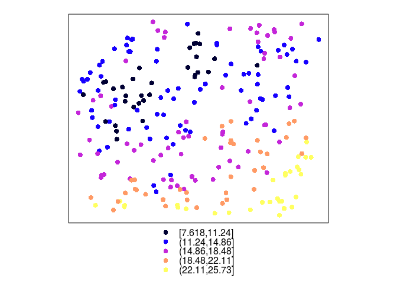
spplot(dane_punktowe, 'srtm')
2.3.2 Dane punktowe - kategorie
dane_punktowe@data$clc <- as.factor(dane_punktowe@data$clc)
spplot(dane_punktowe, 'clc')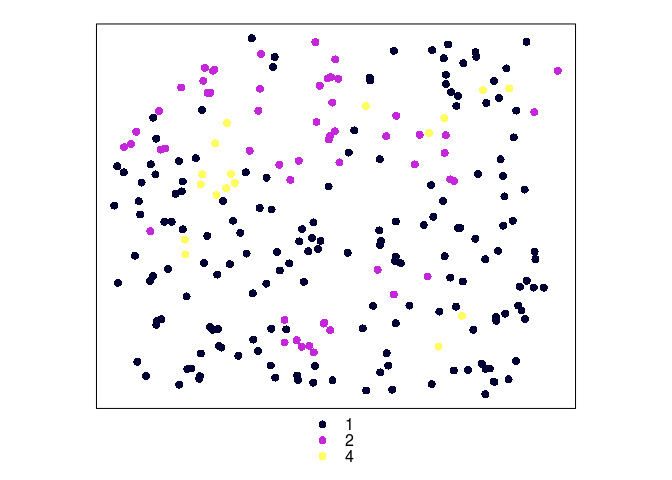
2.3.3 Rastry
levelplot(siatka_raster, margin=FALSE)
2.4 Tworzenie siatek
2.4.1 Siatki regularne
bbox(dane_punktowe)## min max
## x 745592.5 756967.8
## y 712642.4 721238.7extent(dane_punktowe)## class : Extent
## xmin : 745592.5
## xmax : 756967.8
## ymin : 712642.4
## ymax : 721238.7siatka <- expand.grid(x = seq(from = 745050, to = 757050, by = 500),
y = seq(from = 712650, to = 721650, by = 500))
coordinates(siatka) <- ~x + y
gridded(siatka) <- TRUE
proj4string(siatka) <- proj4string(dane_punktowe)siatka <- makegrid(dane_punktowe, cellsize=500)
names(siatka) <- c('x', 'y')
coordinates(siatka) <- ~x + y
gridded(siatka) <- TRUE
proj4string(siatka) <- proj4string(dane_punktowe)2.4.2 Siatki regularne
plot(siatka)
plot(dane_punktowe, add=TRUE)
2.4.3 Siatki nieregularne - klasa RasterLayer
granica <- readOGR(dsn='dane', layer='granica')## OGR data source with driver: ESRI Shapefile
## Source: "dane", layer: "granica"
## with 1 features
## It has 3 fieldssiatka_n <- raster(extent(granica))
res(siatka_n) <- c(500, 500)
siatka_n[] <- 0
proj4string(siatka_n) <- proj4string(granica)
siatka_n <- mask(siatka_n, granica)levelplot(siatka_n, margin=FALSE)
2.4.4 Siatki nieregularne - klasa SpatialPixelsDataFrame
siatka_n <- as(siatka_n, 'SpatialPointsDataFrame')
siatka_n <- siatka_n[!is.na(siatka_n@data$layer), ]
gridded(siatka_n) <- TRUE
plot(siatka_n)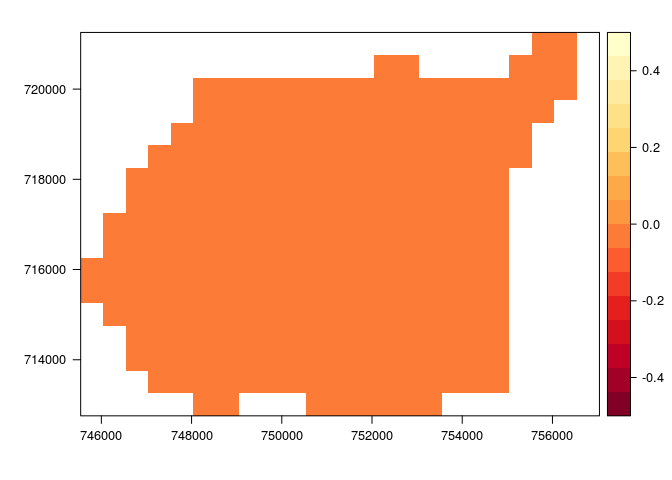
3 Eksploracyjna analiza danych
3.1 Eksploracyjna analiza danych | Cel
- Ogólna charakterystyka danych oraz badanego zjawiska
- Określenie przestrzennego/czasowego typu próbkowania
- Informacja o relacji pomiędzy lokalizacją obserwacji a czynnikami wpływającymi na zmienność przestrzenną cechy
3.2 Dane
3.2.1 Dane
library('geostatbook')
data(punkty)par(mar=c(rep(0, 4)))
plot(punkty)
str(punkty)## Formal class 'SpatialPointsDataFrame' [package "sp"] with 5 slots
## ..@ data :'data.frame': 250 obs. of 5 variables:
## .. ..$ srtm: num [1:250] 231 185 269 212 209 ...
## .. ..$ clc : num [1:250] 1 1 1 1 2 2 2 2 1 1 ...
## .. ..$ temp: num [1:250] 22.5 16 16.1 17.1 22.3 ...
## .. ..$ ndvi: num [1:250] 0.589 0.546 0.509 0.529 0.491 ...
## .. ..$ savi: num [1:250] 0.357 0.382 0.342 0.345 0.22 ...
## ..@ coords.nrs : num(0)
## ..@ coords : num [1:250, 1:2] 753638 749498 750131 751764 753676 ...
## .. ..- attr(*, "dimnames")=List of 2
## .. .. ..$ : NULL
## .. .. ..$ : chr [1:2] "x" "y"
## ..@ bbox : num [1:2, 1:2] 745547 712619 756937 721193
## .. ..- attr(*, "dimnames")=List of 2
## .. .. ..$ : chr [1:2] "x" "y"
## .. .. ..$ : chr [1:2] "min" "max"
## ..@ proj4string:Formal class 'CRS' [package "sp"] with 1 slot
## .. .. ..@ projargs: chr "+init=epsg:2180 +proj=tmerc +lat_0=0 +lon_0=19 +k=0.9993 +x_0=500000 +y_0=-5300000 +ellps=GRS80 +towgs84=0,0,0,0,0,0,0 +units=m"| __truncated__str(punkty@data)## 'data.frame': 250 obs. of 5 variables:
## $ srtm: num 231 185 269 212 209 ...
## $ clc : num 1 1 1 1 2 2 2 2 1 1 ...
## $ temp: num 22.5 16 16.1 17.1 22.3 ...
## $ ndvi: num 0.589 0.546 0.509 0.529 0.491 ...
## $ savi: num 0.357 0.382 0.342 0.345 0.22 ...data(granica)
plot(granica, add=TRUE)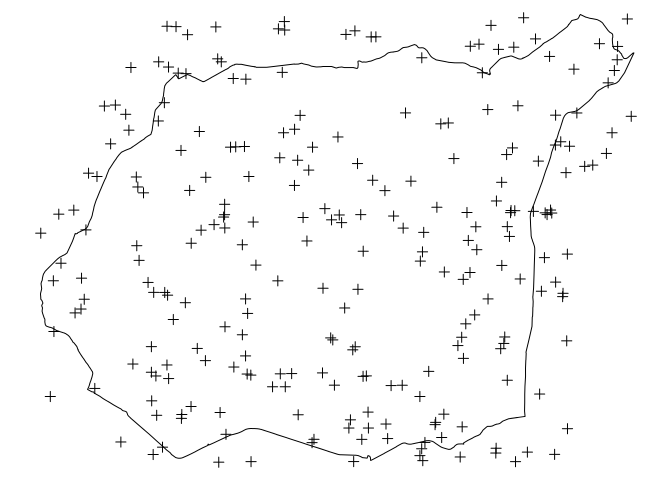
3.3 Statystyki opisowe
3.3.1 Statystyki opisowe
summary(punkty@data)## srtm clc temp ndvi
## Min. :146.2 Min. :1.000 Min. : 8.706 Min. :0.2102
## 1st Qu.:191.0 1st Qu.:1.000 1st Qu.:13.284 1st Qu.:0.4567
## Median :218.2 Median :1.000 Median :15.309 Median :0.5037
## Mean :213.4 Mean :1.268 Mean :15.950 Mean :0.5039
## 3rd Qu.:236.4 3rd Qu.:1.000 3rd Qu.:18.273 3rd Qu.:0.5521
## Max. :278.8 Max. :4.000 Max. :26.139 Max. :0.6848
## savi
## Min. :0.08343
## 1st Qu.:0.29017
## Median :0.32212
## Mean :0.31847
## 3rd Qu.:0.35292
## Max. :0.483543.3.2 Statystyki opisowe | średnia i mediana
median(punkty$temp, na.rm=TRUE)## [1] 15.30944mean(punkty$temp, na.rm=TRUE)## [1] 15.950363.3.3 Statystyki opisowe | średnia i mediana
- W wypadku symetrycznego rozkładu te dwie cechy są równe
- Średnia jest bardziej wrażliwa na wartości odstające
- Mediana jest lepszą miarą środka danych, jeżeli są one skośne
Po co używać średniej?
- Bardziej przydatna w przypadku małych zbiorów danych
- Gdy rozkład danych jest symetryczny
- (Jednak) często warto podawać obie miary
3.3.4 Statystyki opisowe | minimum i maksimum
min(punkty$temp, na.rm=TRUE)## [1] 8.706485max(punkty$temp, na.rm=TRUE)## [1] 26.139473.3.5 Statystyki opisowe | ochylenie standardowe

sd(punkty$temp, na.rm=TRUE)## [1] 3.8395963.4 Wykresy
3.4.1 Histogram
ggplot(punkty@data, aes(temp)) + geom_histogram()
- Stworzony przez Karla Pearsona
- Jest graficzną reprezentacją rozkładu
danych - Wartości danych są łączone w przedziały (na osi poziomej) a na osi pionowej jest ukazana liczba punktów (obserwacji) w każdym przedziale
- Różny dobór przedziałów może dawać inną informację
- W pakiecie ggplot2, domyślnie przedział to zakres/30
3.4.2 Estymator jądrowy gęstości (ang. kernel density estimation)
ggplot(punkty@data, aes(temp)) + geom_density()3.4.3 Wykresy kwantyl-kwantyl (ang.quantile-quantile)
ggplot(punkty@data, aes(sample=temp)) + stat_qq()
3.4.4 Wykresy kwantyl-kwantyl (ang. quantile-quantile)
http://stats.stackexchange.com/questions/101274/how-to-interpret-a-qq-plot 
3.4.5 Dystrybuanta (CDF)
- Dystrybuanta (ang. conditional density function - CDF) wyświetla prawdopodobieństwo, że wartość zmiennej przewidywanej jest mniejsza lub równa określonej wartości
ggplot(punkty@data, aes(temp)) + stat_ecdf()
3.5 Porównanie zmiennych
3.5.1 Kowariancja
- Kowariancja jest nieunormowaną miarą zależności liniowej pomiędzy dwiema zmiennymi
- Kowariancja dwóch zmiennych \(x\) i \(y\) pokazuje jak dwie zmienne są ze sobą liniowo powiązane
- Dodatnia kowariancja wzkazuje na pozytywną relację liniową pomiędzy zmiennymi, podczas gdy ujemna kowariancja świadczy o odwrotnej sytuacji
- Jeżeli zmienne nie są ze sobą liniowo powiązane, wartość kowariacji jest bliska zeru
- Inaczej mówiąc, kowariancja stanowi miarę wspólnej zmienności dwóch zmiennych
- Wielkość samej kowariancji uzależniona jest od przyjętej skali zmiennej (jednostki)
- Inne wyniku uzyskamy (przy tej samej zależności pomiędzy parą zmiennych), gdy będziemy analizować wyniki np. wieku i dochodu w złotówkach a inne dla wieku i dochodu w dolarach
cov(punkty$temp, punkty$ndvi, use='complete.obs')## [1] 0.020475093.5.2 Współczynnik korelacji
- Wspołczynnik korelacji to unormowana miara zależności pomiędzy dwiema zmiennymi, przyjmująca wartości od -1 do 1
- Współczynnik korelacji jest uzyskiwany poprzez podzielenie wartości kowariancji przez odchylenie standardowe wyników
- Z racji unormowania nie jest ona uzależniona od jednostki
ggplot(punkty@data, aes(temp, ndvi)) + geom_point()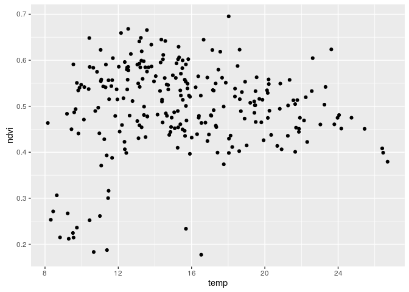
cor(punkty$temp, punkty$ndvi, use='complete.obs')## [1] 0.07049136cor.test(punkty$temp, punkty$ndvi)##
## Pearson's product-moment correlation
##
## data: punkty$temp and punkty$ndvi
## t = 1.1129, df = 248, p-value = 0.2668
## alternative hypothesis: true correlation is not equal to 0
## 95 percent confidence interval:
## -0.05404834 0.19287158
## sample estimates:
## cor
## 0.07049136cor(punkty@data[c(1, 3:5)], use='complete.obs')## srtm temp ndvi savi
## srtm 1.00000000 -0.060458939 0.05230326 0.035760652
## temp -0.06045894 1.000000000 0.07049136 -0.007748702
## ndvi 0.05230326 0.070491358 1.00000000 0.889037014
## savi 0.03576065 -0.007748702 0.88903701 1.000000000corrplot(cor(punkty@data[c(1, 3:5)], use='complete.obs'))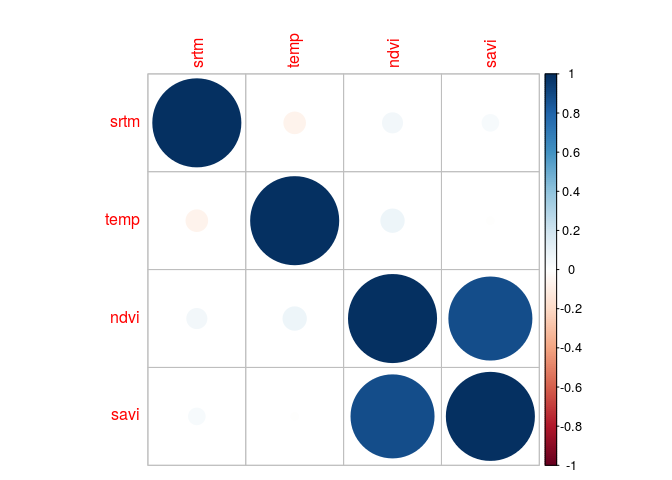
3.5.3 Wykresy pudełkowe
punkty$clc <- as.factor(punkty$clc)
ggplot(punkty@data, aes(clc, temp)) + geom_boxplot()
- Obrazuje pięc podstawowych statystyk opisowych oraz wartości odstające
- Pudełko to zakres międzykwantylowy
- Linie oznaczają najbardziej ekstremalne wartości, ale nie odstające. Górna to 1,5*IQR ponad krawędź pudełka, dolna to 1,5*IQR poniżej wartości dolnej krawędzi pudełka
- Linia środkowa to mediana
3.5.4 Testowanie istotności różnić średniej pomiędzy grupami
punkty$clc <- as.factor(punkty$clc)
aov_test <- aov(temp~clc, data=punkty)
summary(aov_test)## Df Sum Sq Mean Sq F value Pr(>F)
## clc 2 1056 528.0 49.87 <2e-16 ***
## Residuals 247 2615 10.6
## ---
## Signif. codes: 0 '***' 0.001 '**' 0.01 '*' 0.05 '.' 0.1 ' ' 13.5.5 Testowanie istotności różnić średniej pomiędzy grupami
## null device
## 1tukey <- TukeyHSD(aov_test, 'clc')
plot(tukey, las=1)
3.6 Transformacje danych
3.6.1 Transformacje danych
- Transformacja danych może mieć na celu ułatwienie porównywania różnych zmiennych, zniwelowanie skośności rozkładu lub też zmniejszenie wpływu danych odstających
- Centrowanie i skalowanie (standaryzacja):
- Centrowanie danych - wybierana jest przeciętna wartość predyktora, a następnie od wszystkich wartości predyktorów odejmowana jest wybrana wcześniej wartość
- Skalowanie danych - dzielenie każdej wartości predyktora przez jego odchylenie standardowe
- Wadą tego podjeścia jest główne zmniejszenie interpretowalności pojedynczych wartości
- Redukcja skośności:
- Logarytmizacja
- Pierwiastkowanie
- Rodzina transformacji Boxa Coxa
- Inne
3.6.2 Transformacja danych | Logarytmizacja
ggplot(punkty@data, aes(temp)) + geom_density()
punkty$log_tpz <- log(punkty$temp)
ggplot(punkty@data, aes(log_tpz)) + geom_density()
punkty$exp_tpz <- exp(punkty$log_tpz)
ggplot(punkty@data, aes(exp_tpz)) + geom_density()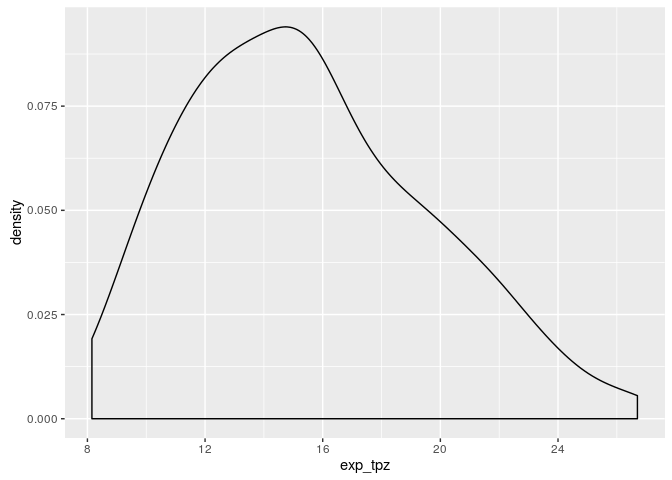
3.6.3 Transformacja danych | Pierwiastkowanie
ggplot(punkty@data, aes(temp)) + geom_density()
punkty$sqrt_tpz <- sqrt(punkty$temp)
ggplot(punkty@data, aes(sqrt_tpz)) + geom_density()
punkty$pow_tpz <- punkty$sqrt_tpz^2
ggplot(punkty@data, aes(pow_tpz)) + geom_density()
3.6.4 Transformacja danych | Rodzina transformacji Boxa Coxa
ggplot(punkty@data, aes(temp)) + geom_density()
transformacja <- BoxCoxTrans(punkty$temp)
transformacja## Box-Cox Transformation
##
## 250 data points used to estimate Lambda
##
## Input data summary:
## Min. 1st Qu. Median Mean 3rd Qu. Max.
## 8.706 13.280 15.310 15.950 18.270 26.140
##
## Largest/Smallest: 3
## Sample Skewness: 0.411
##
## Estimated Lambda: 0.2punkty$bc_tpz <- predict(transformacja, punkty$temp)
ggplot(punkty@data, aes(bc_tpz)) + geom_density()
invBoxCox <- function(x, lambda) if (lambda == 0) exp(x) else (lambda*x + 1)^(1/lambda)
punkty$bc_tpz_inv <- invBoxCox(punkty$bc_tpz, lambda=-0.3)
ggplot(punkty@data, aes(bc_tpz_inv)) + geom_density()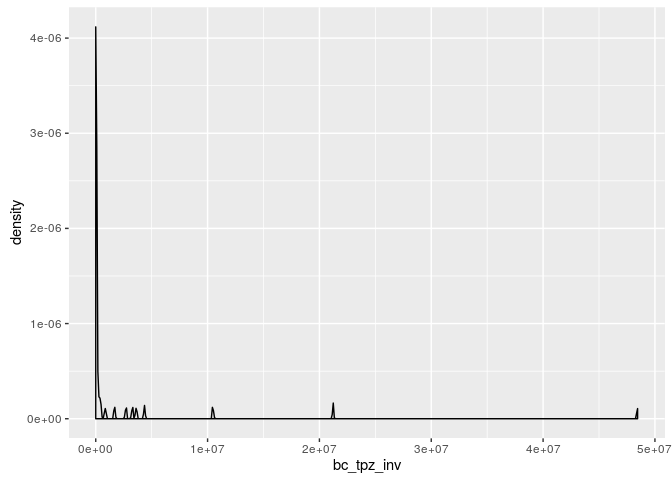
4 Eksploracyjna analiza danych - geostatystyka
4.1 Mapy
4.1.1 Podstawowe terminy | Kontekst przestrzenny
- Populacja - cały obszar, dla którego chcemy określić wybrane właściwości
- Próba - zbiór obserwacji, dla których mamy informacje. Inaczej, próba to podzbiór populacji. Zazwyczaj niemożliwe (lub bardzo kosztowne) jest zdobycie informacji o całej populacji. Z tego powodu bardzo cenne jest odpowiednie wykorzystanie informacji z próby.
4.1.2 Mapy punktowe | Cel
- Sprawdzenie poprawności współrzędnych
- Wgląd w typ próbkowania
- Sprawdzenie poprawności danych - dane odstające lokalnie
- Identyfikacja głównych cech struktury przestrzennej zjawiska (np. trend)
4.1.3 Typ próbowania
- Regularny
- Losowy
- Losowy stratyfikowany
- Preferencyjny
- Liniowy
4.1.4 Typ próbowania | Regularny
set.seed(225)
regularny <- spsample(granica, 150, type = 'regular')
plot(regularny)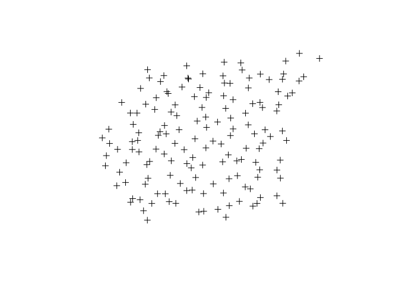
- Zmienna offset
4.1.5 Typ próbowania | Losowy
set.seed(301)
losowy <- spsample(granica, 150, type = 'random')
plot(losowy)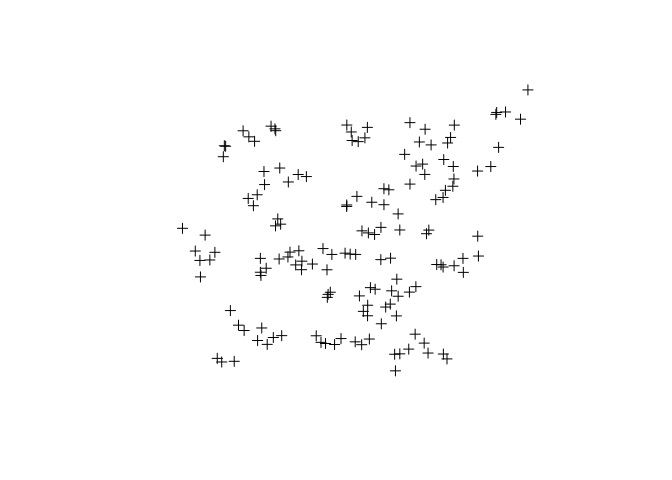
- Każda lokalizacja ma takie samo prawdopodobieństwo wystąpienia
- Każdy punkt jest losowany niezależnie od pozostałych
4.1.6 Typ próbowania | Losowy stratyfikowany
set.seed(125)
strat <- spsample(granica, 150, type = 'stratified')
plot(strat)
4.1.7 Typ próbowania | Preferencyjny I
set.seed(425)
pref <- spsample(granica, 150, type = 'clustered', nclusters=80)
plot(pref)
4.1.8 Typ próbowania | Liniowy
# library('rgdal')
# linia <- readOGR("data", "linia", verbose=FALSE)
# set.seed(224)
# izoliniowy <- spsample(linia, 150, type = 'regular')
# plot(izoliniowy)4.1.9 Mapy punktowe i dane lokalnie odstające
par(mar=c(rep(0, 4)))
data(granica)
plot(granica)
plot(punkty, add=TRUE) 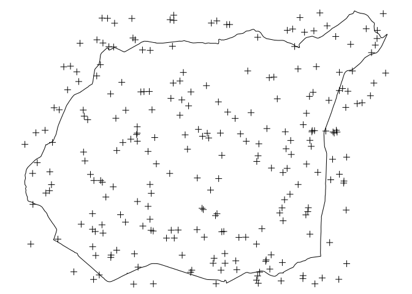
# select.spatial(punkty, digitize=FALSE, rownames=TRUE)
spplot(punkty, 'temp', identify=TRUE)spplot(punkty, 'temp', sp.layout = granica)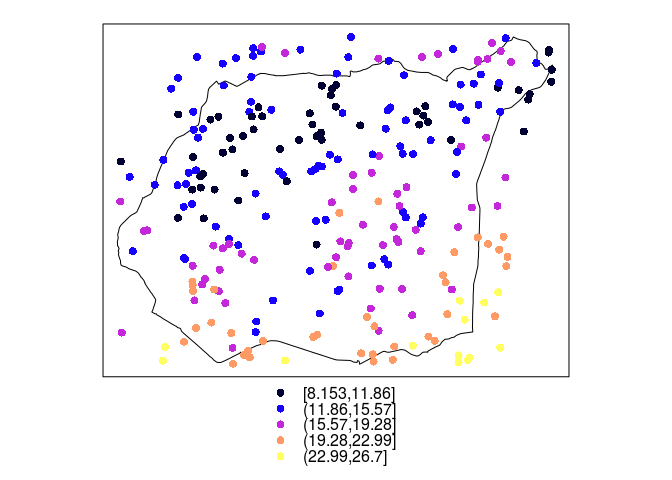
4.2 Rozgrupowanie danych
4.2.1 Rozgrupowanie danych
- Istnieje szereg metod rozgrupowywania danych, między innymi:
- Rozgrupowywanie komórkowe
- Rozgrupowywanie poligonowe
- Celem tych metod jest nadanie wag obserwacjom w celu zapewnienia reprezentatywności przestrzennej danych
4.2.2 Rozgrupowanie danych
data(punkty_pref)
spplot(punkty_pref, 'temp')
summary(punkty_pref$temp)## Min. 1st Qu. Median Mean 3rd Qu. Max.
## 8.233 12.070 14.260 14.280 15.540 25.8504.2.3 Rozgrupowanie komórkowe I | (ang. cell declustering)
\[w'_j=\frac{\frac{1}{n_i}}{\text{liczba komórek z danymi}} \cdot n\] , gdzie \(n_i\) to liczba obserwacji w komórce, a \(n\) to łączna liczba obserwacji
4.2.4 Rozgrupowanie komórkowe I | (ang. cell declustering)
data(punkty_pref)
punkty_pref$id <- 1:nrow(punkty_pref)
spplot(punkty_pref, 'id', colorkey=TRUE)
data(granica)
siatka_n <- raster(extent(granica))
# siatka_n <- raster(xmn=450000, xmx=485000, ymn=5960000, ymx=5989000)
res(siatka_n) <- c(500, 500)
siatka_n[] <- 0
proj4string(siatka_n) <- CRS(proj4string(punkty_pref))
siatka_n <- mask(siatka_n, gBuffer(granica, width = 500))
siatka_n <- as(siatka_n, 'SpatialPolygonsDataFrame')
siatka_n <- siatka_n[!is.na(siatka_n@data$layer), ]
plot(siatka_n)
plot(punkty_pref, add=TRUE)
punkty_pref$liczebnosc <- rep(0, length(punkty_pref))
siatka_nr <- aggregate(punkty_pref['liczebnosc'], by = siatka_n, FUN = length)
spplot(siatka_nr, 'liczebnosc')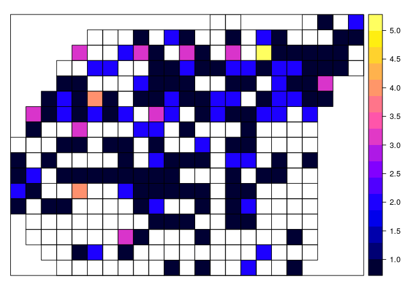
liczba <- over(punkty_pref, siatka_nr)
punkty_pref$waga <- ((1/liczba$liczebnosc)/sum(!is.na(siatka_nr$liczebnosc))) * length(punkty_pref)
spplot(punkty_pref, 'waga')
srednia_arytmetyczna <- mean(punkty_pref$temp)
srednia_wazona_c1 <- mean(punkty_pref$temp * punkty_pref$waga, na.rm=TRUE)4.2.5 Rozgrupowanie komórkowe II | (ang. cell declustering)
data(punkty_pref)
punkty_pref$id <- 1:nrow(punkty_pref)
spplot(punkty_pref, 'id', colorkey=TRUE)
data(granica)
siatka_n <- raster(extent(granica))
res(siatka_n) <- c(500, 500)
siatka_n[] <- 0
proj4string(siatka_n) <- CRS(proj4string(punkty_pref))
siatka_n <- mask(siatka_n, granica)
siatka_n <- as(siatka_n, 'SpatialPointsDataFrame')
siatka_n <- siatka_n[!is.na(siatka_n@data$layer), ]
gridded(siatka_n) <- TRUE
plot(siatka_n)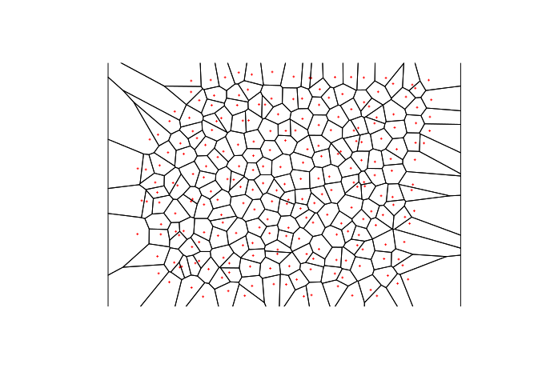
out <- krige(id~1, punkty_pref, siatka_n, nmax=1)## [inverse distance weighted interpolation]spplot(out, 'var1.pred')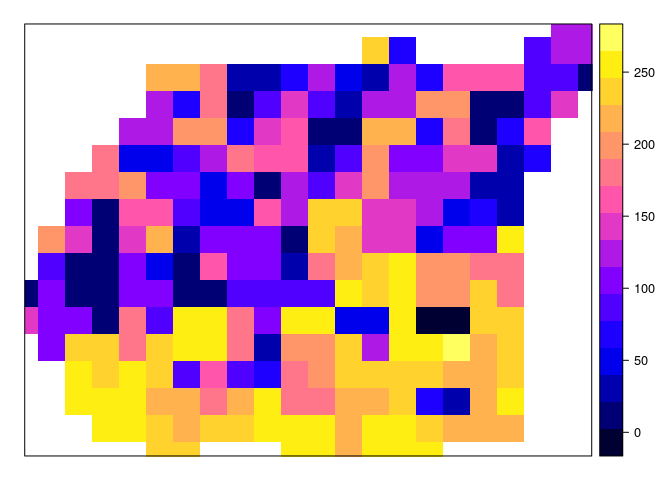
df <- as.data.frame(table(out[[1]]))
df$waga <- df$Freq/sum(df$Freq)
punkty_pref <- merge(punkty_pref, df, by.x='id', by.y='Var1')
summary(punkty_pref$waga)## Min. 1st Qu. Median Mean 3rd Qu. Max. NA's
## 0.00389 0.00389 0.00389 0.00625 0.00778 0.02335 103spplot(out, 'var1.pred', sp.layout=list('sp.points', punkty_pref))
spplot(punkty_pref['waga'])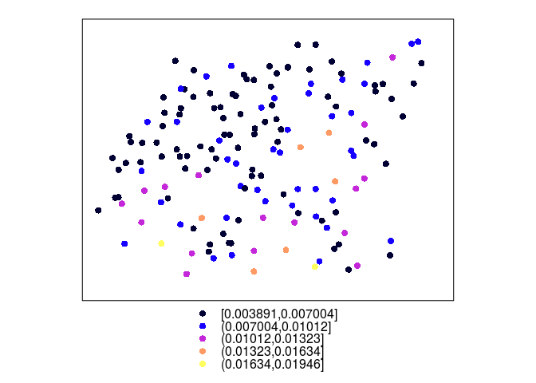
srednia_arytmetyczna <- mean(punkty_pref$temp)
srednia_wazona_c2 <- sum(punkty_pref$temp * punkty_pref$waga, na.rm=TRUE)4.2.6 Rozgrupowanie poligonowe | (ang. polygon declustering)
\[w'_j=\frac{area_j}{\sum_{j=1}^{n}area_j} \cdot n\] , gdzie \(area_j\) powierzchnia dla wybranej obserwacji, a \(n\) to łączna liczba obserwacji
4.2.7 Rozgrupowanie poligonowe | (ang. polygon declustering)
data(punkty_pref)
punkty_pref$id <- 1:nrow(punkty_pref)
spplot(punkty_pref, 'id', colorkey=TRUE)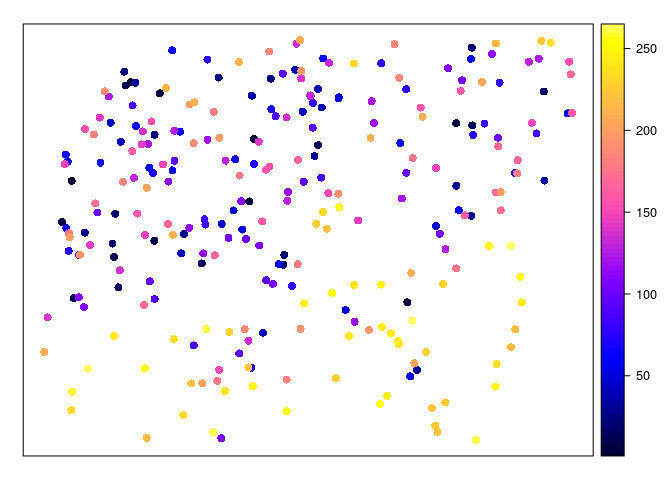
v <- voronoi(punkty_pref)
plot(punkty_pref, cex=0.2, col='red')
plot(v, add=TRUE)
v_intersect <-intersect(granica, v)
plot(punkty_pref, cex=0.2, col='red')
plot(v_intersect, add=TRUE)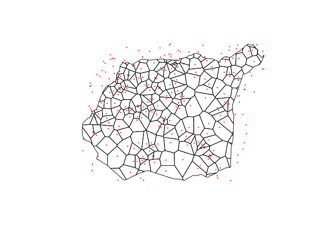
v_intersect$pow <- area(v_intersect)
v_intersect$waga <- v_intersect$pow/sum(v_intersect$pow) * length(punkty_pref)
punkty_pref <- merge(punkty_pref, v_intersect[c('id', 'waga')], by='id')
spplot(punkty_pref, 'waga')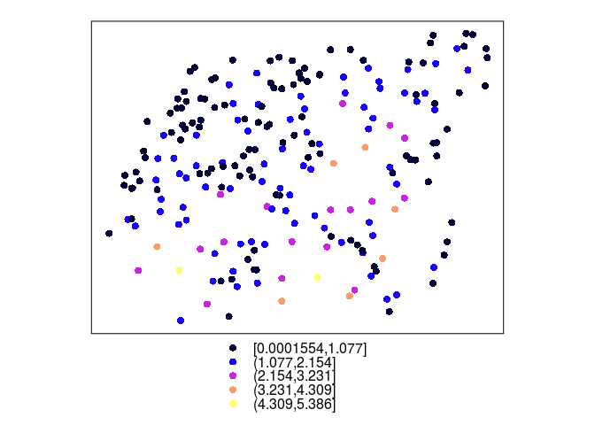
srednia_arytmetyczna <- mean(punkty_pref$temp, na.rm=TRUE)
srednia_wazona_p <- mean(punkty_pref$temp*punkty_pref$waga, na.rm=TRUE)| Średnia arytmetyczna | |
|---|---|
| Populacja | 15.59128 |
| Próba | 14.28147 |
| Rozgrupowanie komórkowe I | 16.65738 |
| Rozgrupowanie komórkowe II | 15.14734 |
| Rozgrupowanie poligonowe | 17.70066 |
5 Eksploracyjna analiza danych - geostatystyka
5.1 Interpolacja
5.1.1 Modele deterministyczne
- Parametry tych modeli są zazwyczaj ustalane w oparciu o funkcję odległości lub powierzchni. Brakuje również szacunków na temat oceny błędu modelu. Np:
- Funkcje wielomianowe
- Funkcje sklejane (ang. Splines)
- Triangulacje
- IDW (ang. Inverse Distance Weighted)
http://neondataskills.org/Data-Workshops/ESA15-Going-On-The-Grid-Spatial-Interpolation-Basics/
5.1.2 Modele deterministyczne
library('geostatbook')
data(punkty)
data(siatka)
data(granica)5.1.3 Modele deterministyczne | Funkcje wielomianowe
wielomian_1 <- gstat(formula=temp~1, data=punkty, degree=1)
wielomian_1_pred <- predict(wielomian_1, newdata=siatka)## [ordinary or weighted least squares prediction]spplot(wielomian_1_pred[1], contour=TRUE,main='Powierzchnia trendu - wielomian pierwszego stopnia')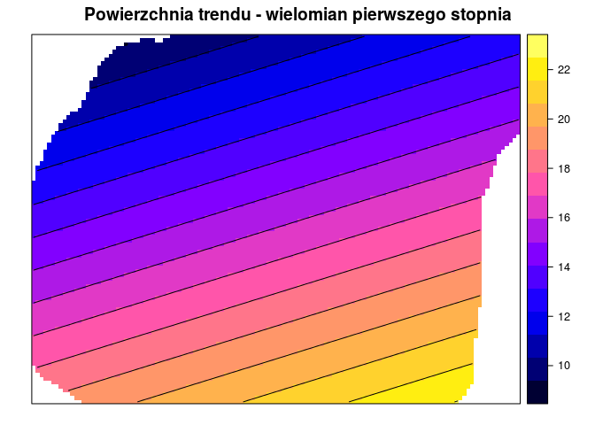
wielomian_2 <- gstat(formula=temp~1, data=punkty, degree=2)
wielomian_2_pred <- predict(wielomian_2, newdata=siatka)## [ordinary or weighted least squares prediction]spplot(wielomian_2_pred[1], contour=TRUE,main='Powierzchnia trendu - wielomian drugiego stopnia')
wielomian_3 <- gstat(formula=temp~1, data=punkty, degree=3)
wielomian_3_pred <- predict(wielomian_3, newdata=siatka)## [ordinary or weighted least squares prediction]spplot(wielomian_3_pred[1], contour=TRUE,main='Powierzchnia trendu - wielomian trzeciego stopnia')
5.1.4 Modele deterministyczne | Funkcje sklejane
tps <- Tps(coordinates(punkty), punkty@data$temp)
ras <- raster(siatka)
spline <- interpolate(ras, tps)
spline <- mask(spline, ras)
spplot(spline, contour=TRUE , main='Funkcje sklejane')
5.1.5 Modele deterministyczne | Triangulacje (Thiessen)
voronoi_interp <- voronoi(punkty)
voronoi_interp <- intersect(granica, voronoi_interp)
spplot(voronoi_interp, 'temp', contour=TRUE, main='Poligony Voronoia')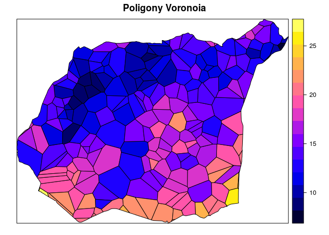
5.1.6 Modele deterministyczne | IDW
idw_wolin <- idw(temp~1, punkty, siatka, idp=2)## [inverse distance weighted interpolation]spplot(idw_wolin, 'var1.pred', contour=TRUE, main='IDW')
5.1.7 Modele deterministyczne | Porównanie
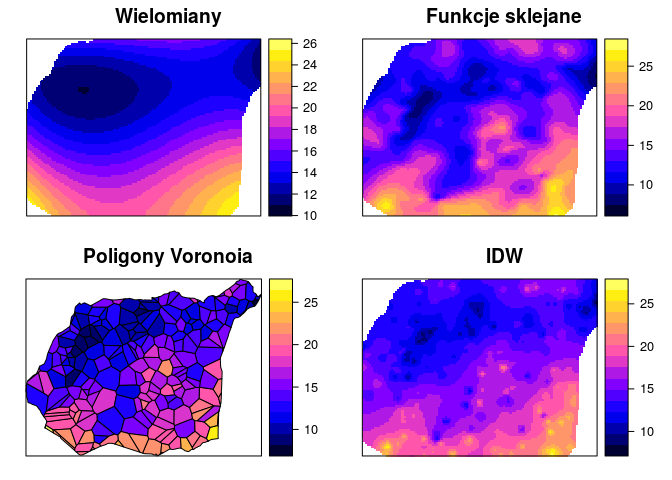
6 … - geostatystyka
6.0.1 Modele statystyczne
- Parametry modeli są określane w oparciu o teorię prawdopodobieństwa. Dodatkowo wynik estymacji zawiera oszacowanie błędu. Np.:
- Kriging
- Modele regresyjne
- Modele bayesowe
- Modele hybrydowe
6.1 Geostatystyka - prolog
6.1.1 Geostatystyka
- Zbiór narzędzi statystycznych uwzględniających w analizie danych ich przestrzenną i czasową lokalizację, a opartych o teorię funkcji losowych.
6.1.2 Geostatystyka | Funkcje
- Identyfikacja i modelowanie struktury przestrzennej/czasowej zjawiska
- Estymacja - szacowanie wartości badanej zmiennej w nieopróbowanym miejscu i/lub momencie czasu
- Symulacja - generowanie alternatywnych obrazów, które honorują wyniki pomiarów i strukturę przestrzenną/czasową zjawiska
- Optymalizacja próbkowania/sieci pomiarowej
6.1.3 Geostatystyczna analiza danych

6.1.4 Geostatystyka | Dane wejściowe
- Wystarczająca duża liczba punktów (minimalnie >30, ale zazwyczaj więcej niż 100/150)
- Są reprezentatywne
- Są niezależne
- Były stworzone używając stałej metodyki
- Są wystarczająco dokładne
6.1.5 Geostatystyka | Podstawowe etapy
- Zaprojektowanie sposobu (typu) próbkowania oraz organizacji zadań
- Zebranie danych, analiza labolatoryjna
- Wstepna eksploracja danych, ocena ich jakości
- Modelowanie semiwariogramów na podstawie dostępnych danych
- Estymacja badanej cechy
- Porównanie i ocena modeli
- Stworzenie wynikowego produktu i jego dystrybucja
6.2 Przestrzenna kowariancja, korelacja i semiwariancja
6.2.1 Przestrzenna kowariancja, korelacja i semiwariancja | Założenia
- Przestrzennej ciągłości - przestrzenna korelacja między zmienny w dwóch lokalizacjach zależy tylko od ich odległości (oraz czasem kierunku), lecz nie od tego gdzie są one położone
- Stacjonarności - średnia i wariancja są stałe na całym badanym obszarze
6.2.2 Przestrzenna kowariancja, korelacja i semiwariancja
- \(u\) - wektor współrzędnych
- \(z(u)\) - badana zmienna jako funkcja położenia - inaczej określany jako ogon (ang. tail)
- \(h\) - lag - odstęp pomiędzy dwoma lokalizacjami
- \(z(u+h)\) - wartość badanej zmiennej odległej o odstęp \(h\) - inaczej określany jako głowa (ang. head)
6.2.3 Przestrzenna kowariancja, korelacja i semiwariancja
- Kowariancja i korelacja to miary podobieństwa pomiędzy dwoma zmiennymi
- Przenosząc to na aspekt przestrzenny, badamy jedną zmienną ale pomiędzy dwoma punktami odległymi od siebie o pewien dystans (okreslany jako lag)
- W efekcie otrzymujemy miarę podobieństwa pomiędzy wartością głowy i ogona
- Trzecią miarę charakteryzującą relację między obserwacjami odległymi o kolejne odstępy jest semiwariancja
- Z praktycznego punktu widzenia, semiwariogram jest preferowaną miarą relacji przestrzennej, ponieważ wykazuje tendencję do lepszego wygładzania danych niż funkcja kowariancji
- Dodatkowo, semiwariogram jest mniej wymagający obliczeniowo
- Jednocześnie, dla potrzeb interpretacji relacji kowarancja i korelacja przestrzenna nadaje się nie gorzej niż semiwariancja
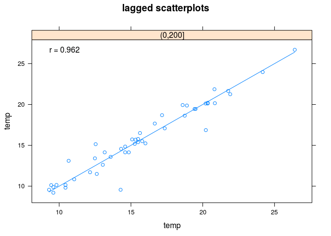
6.2.4 Wykres rozrzutu z przesunięciem
hscat(temp~1, punkty, breaks=seq(0, 4000, by=500))
6.2.5 Autokowariancja
- Autokowariancja pokazuje jak mocno są ze sobą powiązane przestrzennie wartości pary obserwacji odległych od siebie o kolejne przedziały
kowario <- variogram(temp~1, punkty, covariogram = TRUE)
plot(kowario)
6.2.6 Autokorelacja
- Autokorelogram jest wykresem pokazującym jedną z miar autokorelacji (np. I Morana lub C Geary’ego) w stosunku do odległości
wsp <- coordinates(punkty)
kor <- correlog(wsp, punkty$temp)
kor <- as.data.frame(kor)
ggplot(kor, aes(dist.class, coef)) + geom_smooth(linetype=0) + geom_line() + geom_point(size=5)
6.2.7 Semiwariancja
- Zmienność przestrzenna może być określona za pomocą semiwariancji. Jest to połowa średniej kwadratu różnicy pomiędzy wartościami badanej zmiennej w dwóch lokalizacjach odległych o wektor \(h\) \[ \gamma(h) = \frac{1}{2}E[(z(s) - z(s+h))^2] \]
6.2.8 Określenie występowania autokorelacji przestrzennej | Chmura semiwariogramu
- Jeżeli w badanej próbie mamy \(n\) obserwacji oznacza to, że możemy zaobserwować \(\frac{1}{2}n(n-1)\) par obserwacji
- Każda para obserwacji daje nam informacje o semiwariancji występującej wraz z odległością
- Semiwariancję można zaprezentować na wykresie zwanym chumrą semiwariogramu
6.2.9 Semiwariancja | Przykładowe obliczenia
odl <- dist(coordinates(punkty)[c(1, 2), ])
gamma <- 0.5 * (punkty$temp[1] - punkty$temp[2])^2
gamma## [1] 20.601226.2.10 Określenie występowania autokorelacji przestrzennej | Chmura semiwariogramu
vario_cloud <- variogram(temp~1, punkty, cloud=TRUE)
plot(vario_cloud) 
6.2.11 Określenie występowania autokorelacji przestrzennej | Chmura semiwariogramu
vario_cloud_sel <- plot(variogram(temp~1, punkty, cloud=TRUE), digitize=TRUE)
plot(vario_cloud_sel, punkty) 6.2.12 Semiwariogram | Charakterystyka struktury przestrzennej
- Semiwariogram to wykres pokazujący relację pomiędzy odległością a semiwariancją
- Jest to uśrednieniem semiwariancji dla kolejnych odstępów (lagów)
- W oparciu o semiwariogram empiryczny możemy następnie dopasować do niego model/e
\[ \hat{\gamma}(h) = \frac{1}{2N(h)}\sum_{i=1}^{N(h)}(z(s_i) - z(s_i+h))^2 \]
gdzie \(N(h)\) oznacza liczbę par punktów w odstępie \(h\)
6.2.13 Semiwariogram
- Nugget - efekt nuggetowy - pozwala na określenie błędu w danych wejściowych oraz zmienności na dystansie krótszym niż pierwszy odstęp
- Sill - semiwariancja progowa - oznacza wariancję badanej zmiennej
- Range - zasięg - to odległość do której istnieje przestrzenna korelacja
6.2.14 Semiwariogram | Rules of thumb
- W każdym odstępie powinno się znaleźć co najmniej 30 par punktów
- Maksymalny zasięg semiwariogramu (ang. cutoff distance) to 1/2 pierwiastka z badanej powierzchni (inne źródła mówią o połowie z przekątnej badanego obszaru/jednej trzeciej)
- Liczba odstępów powinna nie być mniejsza niż 10
- Optymalnie maksymalny zasięg semiwariogramu powinien być dłuższy o 10-15% od zasięgu zjawiska
- Optymalnie odstępy powinny być jak najbliżej siebie i jednocześnie nie być chaotyczne
- Warto metodą prób i błędów określić optymalne parametry semiwariogramu
- Należy określić czy zjawisko wykazuje anizotropię przestrzenną
6.2.15 Semiwariogram | Obliczenia pomocnicze
- Liczba par obserwacji
0.5*length(punkty)*(length(punkty)-1)## [1] 31125- Połowa pierwiastka powierzchni
pow <- area(granica)
as.vector(0.5*sqrt(pow))## [1] 3980.472- Powierzchnia zajmowana przez jedną próbkę
pow_pr <- area(granica)/length(punkty)
pow_pr## 117
## 253506.6- Średnia odległość między punktami
sqrt(pow_pr)## 117
## 503.49446.2.16 Semiwariogram | Maksymalny zasięg semiwariogramu (ang. Cutoff distance)
- Maksymalny zasięg semiwariogramu (ang. Cutoff distance) jest domyślnie wyliczany w pakiecie
gstatjako 1/3 z najdłuższej przekątnej badanego obszaru
vario_par <- variogram(temp~1, punkty)
vario_par## np dist gamma dir.hor dir.ver id
## 1 127 204.2244 1.233999 0 0 var1
## 2 271 494.5572 2.802019 0 0 var1
## 3 522 798.7911 3.797612 0 0 var1
## 4 587 1112.7783 5.037545 0 0 var1
## 5 856 1428.7866 5.967276 0 0 var1
## 6 920 1743.7864 7.411276 0 0 var1
## 7 1068 2062.3041 7.514067 0 0 var1
## 8 1106 2378.9333 8.369087 0 0 var1
## 9 1184 2691.5206 9.539870 0 0 var1
## 10 1215 3011.7729 9.636891 0 0 var1
## 11 1362 3324.6705 9.461429 0 0 var1
## 12 1379 3642.5616 11.301515 0 0 var1
## 13 1405 3963.6776 11.335589 0 0 var1
## 14 1468 4276.0078 13.866888 0 0 var1
## 15 1482 4598.4144 15.353206 0 0 var1plot(vario_par, plot.numbers=TRUE)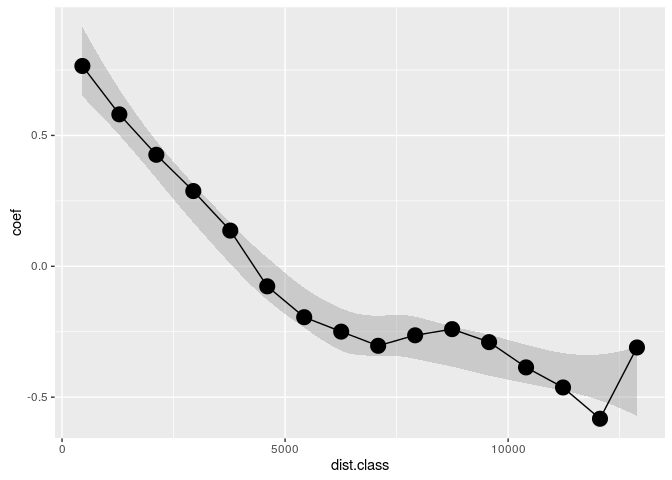
vario_par <- variogram(temp~1, punkty, cutoff = 4000)
plot(vario_par)
6.2.17 Semiwariogram | Odległość między przedziałami (ang. Interval width)
- Domyślnie to maksymalny zasięg semiwariogramu podzielony przez 15 dahe odległość między przedziałami (ang. Interval width)
vario_par <- variogram(temp~1, punkty, cutoff = 1000, width = 250)
plot(vario_par)
6.3 Anizotropia
6.3.1 Anizotropia struktury przestrzennej
- W wielu rzeczywistych sytuacjach, wartość cechy zależy nie tylko od odległości, ale także od kierunku
6.3.2 Mapa semiwariogramu
- Mapa semiwariogramu (powierzchnia semiwariogramu) służy do określenia czy struktura przestrzenna zjawiska posiada anizotropię, a jeżeli tak to w jakim kierunku
- Na podstawie mapy semiwariogramu identyfikuje się parametry potrzebne do zbudowania semiwariogramów kierunkowych
vario_map <- variogram(temp~1, punkty, cutoff=4000, width=400, map=TRUE)
plot(vario_map, threshold=30) # co najmniej 30 par punktów
6.3.3 Mapa semiwariogramu | 3D
plot3D(raster(vario_map$map), col=rainbow)6.3.4 Semiwariogramy kierunkowe | Kierunki
- W przypadku, gdy zjawisko wykazuje anizotropię przestrzenną, możliwe jest stworzenie semiwariogramów dla różnych wybranych kierunków
- Przykładowo, dla argumentu alpha = c(0, 45, 90, 135) cztery główne kierunki to 0, 45, 90 i 135 stopni. Oznacza to, że dla kierunku 45 stopni brane pod uwagę będą wszystkie pary punktów pomiędzy 22,5 a 67,5 stopnia.
vario_kier <- variogram(temp~1, punkty, alpha = c(0, 45, 90, 135))
plot(vario_kier)
6.3.5 Semiwariogramy kierunkowe | Kierunki
vario_kier <- variogram(temp~1, punkty, alpha = c(60, 105, 150, 195))
plot(vario_kier)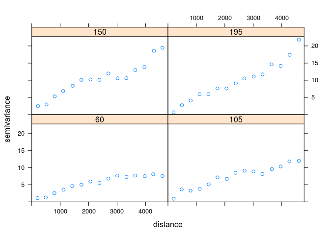
7 Modelowanie matematycznie autokorelacji przestrzennej
7.0.1 Modelowanie matematycznie autokorelacji przestrzennej
- Semiwariogram empiryczny jest:
- Nieciągły - wartości semiwariancji są średnimi przedziałowymi
- Chaotyczny - badana próba jest jedynie przybliżeniem rzeczywistości, dodatkowo obciążonym błędami
- Estymacje i symulacje przestrzenne wymagają modelu struktury przestrzennej analizowanej cechy, a nie tylko wartości empirycznych (wyliczonych z danych)
- Dodatkowo, matematycznie modelowanie wygładza chaotyczne fluktuacje danych empirycznych
7.1 Modele podstawowe
7.1.1 Modele podstawowe
- Nuggetowy (ang. Nugget effect model)
- Sferyczny (ang. Spherical model)
- Gaussowski (ang. Gaussian model)
- Potęgowy (ang. Power model)
- Wykładniczy (ang. Exponential model)
- Inne
vgm()## short long
## 1 Nug Nug (nugget)
## 2 Exp Exp (exponential)
## 3 Sph Sph (spherical)
## 4 Gau Gau (gaussian)
## 5 Exc Exclass (Exponential class/stable)
## 6 Mat Mat (Matern)
## 7 Ste Mat (Matern, M. Stein's parameterization)
## 8 Cir Cir (circular)
## 9 Lin Lin (linear)
## 10 Bes Bes (bessel)
## 11 Pen Pen (pentaspherical)
## 12 Per Per (periodic)
## 13 Wav Wav (wave)
## 14 Hol Hol (hole)
## 15 Log Log (logarithmic)
## 16 Pow Pow (power)
## 17 Spl Spl (spline)
## 18 Leg Leg (Legendre)
## 19 Err Err (Measurement error)
## 20 Int Int (Intercept)show.vgms()
show.vgms(models=c('Nug', 'Sph', 'Gau', 'Pow', 'Exp'), range=1.4, max=2.5)
show.vgms(models=c('Nug', 'Sph', 'Gau', 'Pow', 'Exp'), range=1.4, max=2.5, as.groups = TRUE)
7.2 Metody modelowania
7.2.1 Metody modelowania
- Ustawianie “ręczne” parametrów modelu, np. funkcja
vgmz pakietugstat - Ustawianie “wizualne” parametrów modelu, np. funkcja
eyefitz pakietugeoR - Automatyczny wybór parametrów na podstawie różnych kryterów statystycznych, np. funkcja
fit.variogramz pakietugstat,variofitz pakietugeoR,autofitVariogramz pakietuautomap
7.2.2 Metody modelowania
- Odpowiednie określenie modelu matematycznego często nie jest proste
- Automatyczne metody nie zawsze są w stanie dać lepszy wynik od modelowania “ręcznego”
- Najlepiej, gdy wybór modelu oparty jest o wiedzę na temat zakładanego procesu przestrzennego
7.2.3 Metody modelowania | Liniowy model regionalizacji
- W przypadku, gdy analizowane zjawisko jest złożone, odwzorowanie kształtu semiwariogramu empirycznego wymaga połączenia dwóch lub większej liczby modeli podstawowych
- W takiej sytuacji konieczne jest spełnienie dwóch warunków:
- Wszystkie zastosowane modele muszą być dopuszczalne (
vgm()) - Wariancja progowa każdego podstawowego modelu musi być dodatnia
- Wszystkie zastosowane modele muszą być dopuszczalne (
7.3 Modelowanie semiwariogramu
7.3.1 Modelowanie semiwariogramu | funkcja fit.variogram
- Funkcja
fit.variogramdopasowuje zasięg oraz semiwariancję progową w oparciu o ustalone “ręcznie” parametry modelu
7.4 Modelowanie izotropowe
7.4.1 Modelowanie izotropowe | Modelowanie “wizualne”
library('geostatbook')
data(punkty)v_eye <- eyefit(variog(as.geodata(punkty, 'temp')))
ve_fit <- as.vgm.variomodel(v_eye[[1]])7.4.2 Modelowanie izotropowe | Model nuggetowy
toFix
vario <- variogram(temp~1, punkty)
plot(vario)
model_nug <- vgm(10, model = 'Nug')
model_nug
plot(vario, model=model_nug)
fitted_nug <- fit.variogram(vario, model_nug)
fitted_nug
plot(vario, model=fitted_nug)7.4.3 Modelowanie izotropowe | Model sferyczny
vario <- variogram(temp~1, punkty)
plot(vario)
model_sph <- vgm(psill=10, model = 'Sph', range=3000)
model_sph## model psill range
## 1 Sph 10 3000plot(vario, model=model_sph)
fitted_sph <- fit.variogram(vario, model_sph)
fitted_sph## model psill range
## 1 Sph 12.5445 4440.768plot(vario, model=fitted_sph)
7.4.4 Modelowanie izotropowe | Model Gaussowski
vario <- variogram(temp~1, punkty)
plot(vario)
model_gau <- vgm(psill=15, model = 'Gau', range=3000)
model_gau## model psill range
## 1 Gau 15 3000plot(vario, model=model_gau)
fitted_gau <- fit.variogram(vario, model_gau)
fitted_gau## model psill range
## 1 Gau 8.085963 798.7454plot(vario, model=fitted_gau)
7.4.5 Modelowanie izotropowe | Model potęgowy
vario <- variogram(temp~1, punkty)
plot(vario)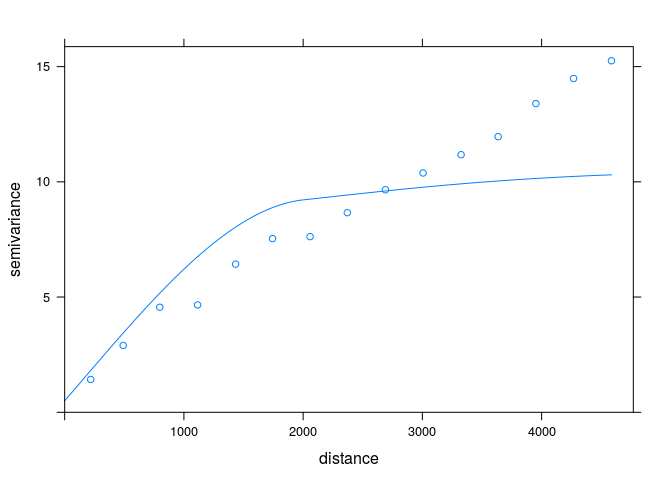
model_pow <- vgm(psill=1, model = 'Pow', range=0.30)
model_pow## model psill range
## 1 Pow 1 0.3plot(vario, model=model_pow)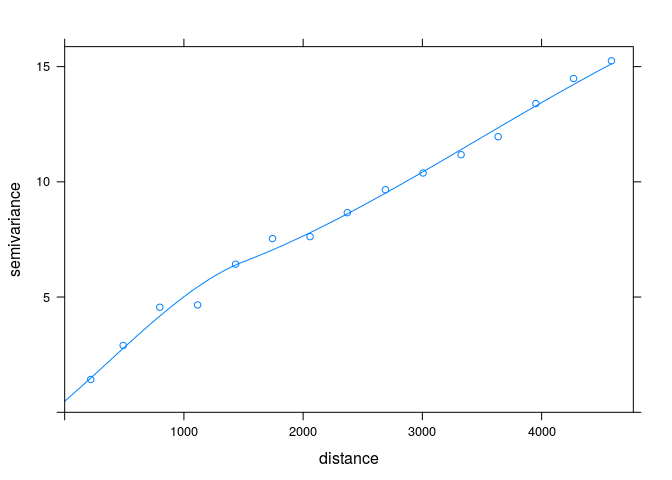
fitted_pow <- fit.variogram(vario, model_pow)
fitted_pow## model psill range
## 1 Pow 0.02732271 0.7382383plot(vario, model=fitted_pow)
7.4.6 Modelowanie izotropowe | Model wykładniczy
vario <- variogram(temp~1, punkty)
plot(vario)
model_exp <- vgm(psill=10, model = 'Exp', range=900)
model_exp## model psill range
## 1 Exp 10 900plot(vario, model=model_exp)
fitted_exp <- fit.variogram(vario, model_exp)
fitted_exp## model psill range
## 1 Exp 16.50715 3083.864plot(vario, model=fitted_exp)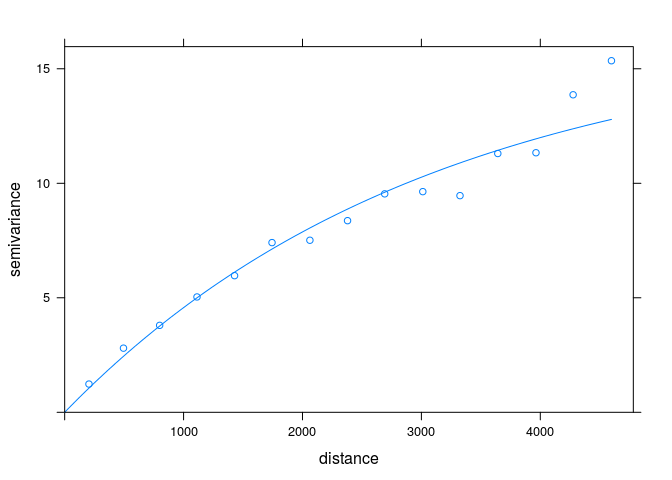
7.4.7 Modelowanie izotropowe | Modele złożone I
vario <- variogram(temp~1, punkty)
model_zl1 <- vgm(psill=10, model = 'Sph', range = 3000, add.to = vgm(0.5, 'Nug'))
model_zl1## model psill range
## 1 Nug 0.5 NA
## 2 Sph 10.0 3000plot(vario, model=model_zl1)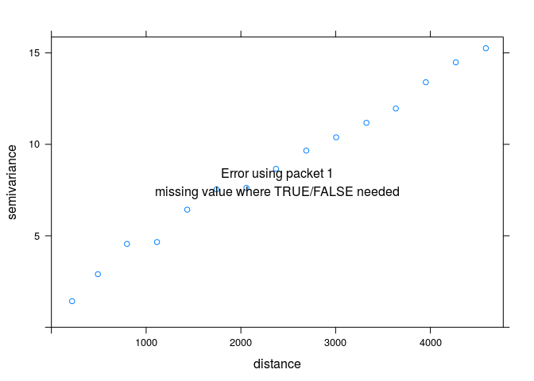
fitted_zl1 <- fit.variogram(vario, model_zl1)
fitted_zl1## model psill range
## 1 Nug 0.7346354 0.000
## 2 Sph 13.2621876 5602.027plot(vario, model=fitted_zl1)
7.4.8 Modelowanie izotropowe | Modele złożone II
vario <- variogram(temp~1, punkty)
model_zl2 <- vgm(2, 'Gau', 3000, add.to = vgm(8, model = 'Sph', range = 2000, nugget = 0.5))
model_zl2## model psill range
## 1 Nug 0.5 0
## 2 Sph 8.0 2000
## 3 Gau 2.0 3000plot(vario, model=model_zl2)
fitted_zl2 <- fit.variogram(vario, model_zl2)
plot(vario, model=fitted_zl2)7.5 Modelowanie anizotropowe
7.5.1 Anizotropia
- Uwzględnienie anizotropii wymaga zamiany parametru zasięgu na trzy inne parametry:
- Zasięg w dominującym kierunku
- Kąt określający dominujący kierunek
- Proporcję anizotropii, czyli relację pomiędzy zasięgiem w dominującym kierunku a zasięgiem w przeciwległym kierunku
vario_map <- variogram(temp~1, punkty, cutoff=4000, width=400, map=TRUE)
plot(vario_map)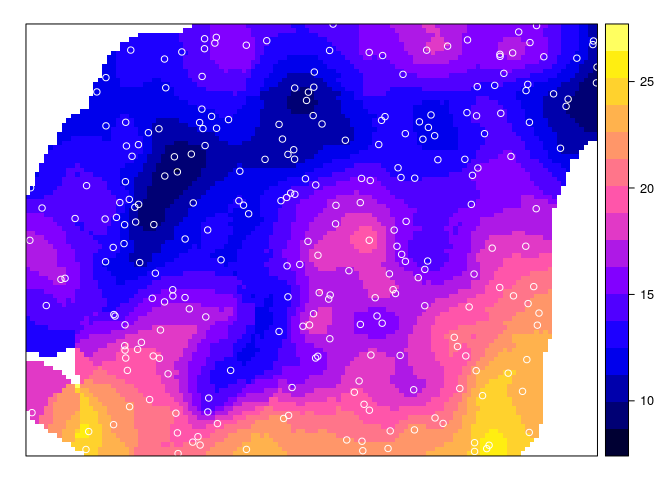
vario_kier <- variogram(temp~1, punkty, alpha = c(60, 105, 150, 195), cutoff=20000)
plot(vario_kier, plot.numbers=TRUE)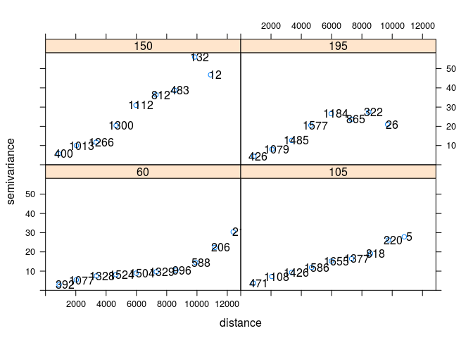
vario_kier_fit <- vgm(psill=8, model='Sph', range=4000, nugget=0.5, anis = c(60, .4))
plot(vario_kier, vario_kier_fit, as.table=TRUE)
8 Estymacje jednozmienne
8.1 Kriging
8.1.1 Kriging | Interpolacja geostatystyczna
- Zaproponowana w latach 50. przez Daniela Krige
- Istnieje wiele rodzajów krigingu
- Główna zasada mówi, że prognoza w danej lokalizacji jest kombinacją obokległych obserwacji
- Waga nadawana każdej z obserwacji jest zależna od stopnia (przestrzennej) korelacji - stąd też bierze się istotna rola semiwariogramów
8.2 Rodzaje krigingu
8.2.1 Rodzaje krigingu
- Kriging prosty (ang. Simple kriging)
- Kriging zwykły (ang. Ordinary kriging)
- Kriging z trendem (ang. Kriging with a trend)
- Kriging danych kodowanych (ang. Indicator kriging)
- Kriging stratyfikowany (ang. Kriging within strata – KWS)
- Kriging prosty ze zmiennymi średnimi lokalnymi (ang. Simple kriging with varying local means - SKlm)
- Kriging z zewnętrznym trendem/Uniwersalny kriging (ang.Kriging with an external trend/Universal kriging)
- Kokriging (ang. Co-kriging)
- Inne
8.3 Kriging prosty (ang. Simple kriging)
8.3.1 Kriging prosty (ang. Simple kriging)
- Zakłada, że średnia jest znana i stała na całym obszarze
8.3.2 Kriging prosty (ang. Simple kriging)
library('geostatbook')
data(punkty)
data(siatka)vario <- variogram(temp~1, punkty)
model <- vgm(10, model = 'Sph', range = 4000, nugget = 0.5)
model## model psill range
## 1 Nug 0.5 0
## 2 Sph 10.0 4000fitted <- fit.variogram(vario, model)
plot(vario, model=fitted)
sk <- krige(temp~1, punkty, siatka, model=fitted, beta=15.324)## [using simple kriging]summary(sk)## Object of class SpatialPixelsDataFrame
## Coordinates:
## min max
## x 745586.7 756926.7
## y 712661.2 721211.2
## Is projected: TRUE
## proj4string :
## [+init=epsg:2180 +proj=tmerc +lat_0=0 +lon_0=19 +k=0.9993
## +x_0=500000 +y_0=-5300000 +ellps=GRS80 +towgs84=0,0,0,0,0,0,0
## +units=m +no_defs]
## Number of points: 10993
## Grid attributes:
## cellcentre.offset cellsize cells.dim
## x 745586.7 90 127
## y 712661.2 90 96
## Data attributes:
## var1.pred var1.var
## Min. : 8.606 Min. :1.365
## 1st Qu.:12.913 1st Qu.:2.100
## Median :15.009 Median :2.412
## Mean :15.663 Mean :2.499
## 3rd Qu.:17.874 3rd Qu.:2.810
## Max. :25.938 Max. :5.266spplot(sk, 'var1.pred')
spplot(sk, 'var1.var')
8.4 Kriging zwykły (ang. Ordinary kriging)
8.4.1 Kriging zwykły (ang. Ordinary kriging)
- Średnia traktowana jest jako nieznana
- Uwzględnia lokalne fluktuacje średniej poprzez stosowanie ruchomego okna
8.4.2 Kriging zwykły (ang. Ordinary kriging)
ok <- krige(temp~1, punkty, siatka, model=fitted, maxdist=1000)## [using ordinary kriging]# ok <- krige(temp~1, punkty, siatka, model=fitted, nmax=30)spplot(ok, 'var1.pred')
spplot(ok, 'var1.var')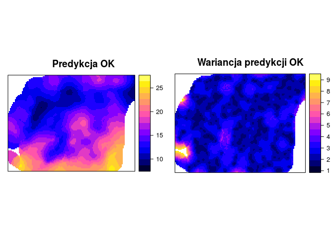
spplot(ok, "var1.var", sp.layout=list(punkty, pch=21, col="white"))
–> ## Kriging z trendem (ang. Kriging with a trend) ### Kriging z trendem (ang. Kriging with a trend)
vario_kzt <- variogram(temp~x+y, data=punkty)
plot(vario_kzt)model_kzt <- vgm(psill = 5, model = 'Sph', range = 2500, nugget = 1)
fitted_kzt <- fit.variogram(vario_kzt, model_kzt)
fitted_kzt## model psill range
## 1 Nug 0.4470857 0
## 2 Sph 6.5817020 2052plot(vario_kzt, fitted_kzt)
punkty@data <- cbind(punkty@data, as.data.frame(coordinates(punkty)))
kzt <- krige(temp~x+y, punkty, siatka, model=fitted_kzt)## [using universal kriging]spplot(kzt, 'var1.pred')
spplot(kzt, 'var1.var')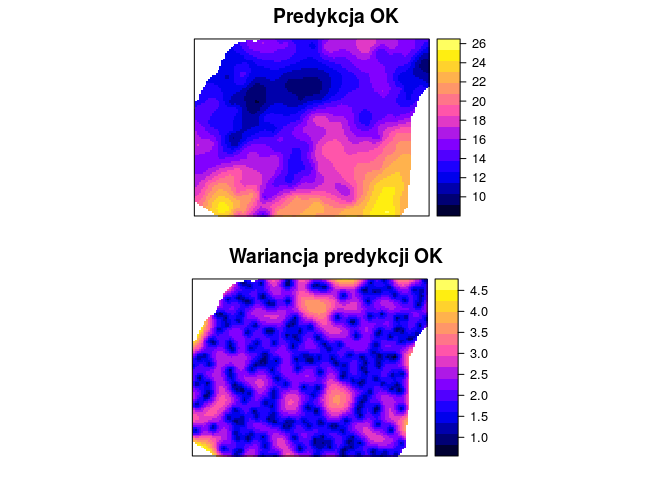
8.5 Porównanie wyników SK, OK i KZT
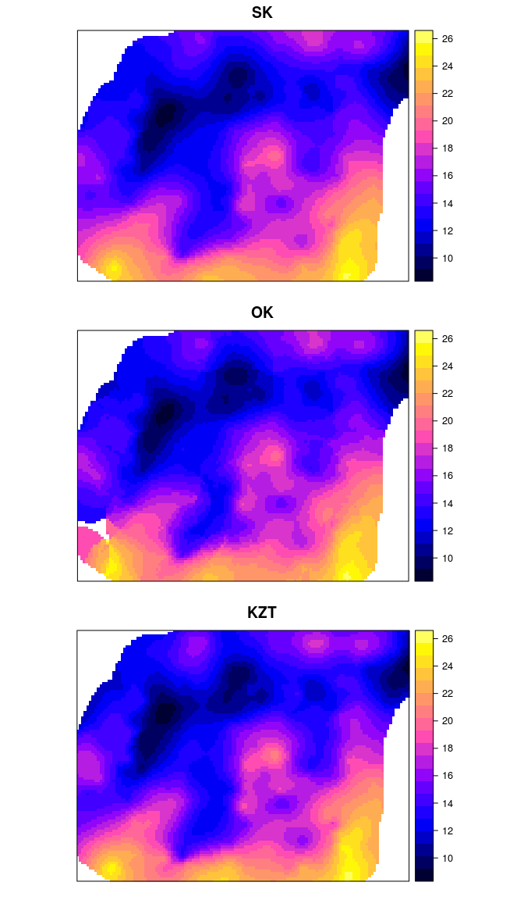
9 Estymacja lokalnego rozkładu prawdopodobieństwa
9.1 Kriging danych kodowanych (ang. Indicator kriging) | Wprowadzenie
9.1.1 Kriging danych kodowanych (ang. Indicator kriging)
- Jest to metoda krigingu oparta o dane kategoryzowane lub też dane przetworzone z postaci ciągłej do binarnej
- Zazwyczaj używana jest to oszacowania prawdopodobieństwa przekroczenia zdefiniowanej wartości progowej
- Może być też używana do szacowania wartości z całego rozkładu
9.1.2 Kriging danych kodowanych (ang. Indicator kriging)
- Wartości danych wykorzystywane do krigingu danych kodowanych są określone jako 0 lub 1
- Powyzsze kategorie reprezentują czy wartość danej zmiennej jest powyżej czy poniżej określonego progu
9.1.3 Kriging danych kodowanych (ang. Indicator kriging)| Wady i zalety
- Zalety:
- Możliwość zastosowania, gdy nie interesuje nas konkretna wartość, ale znalezienie obszarów o wartości przekraczającej dany poziom
- Nie jest istotny kszałt rozkładu
- Wady:
- Potencjalnie trudne do modelowania semiwariogramy (szczególnie skrajnych przedziałów)
- Czasochłonność/pracochłonność
9.2 Kriging danych kodowanych (ang. Indicator kriging) | Przykłady
9.2.1 Binaryzacja danych
library('geostatbook')
data(punkty)
data(siatka)summary(punkty$temp) ## Min. 1st Qu. Median Mean 3rd Qu. Max.
## 8.153 12.460 15.210 15.520 18.260 26.700punkty$temp_ind <- punkty$temp > 20
summary(punkty$temp_ind) ## Mode FALSE TRUE NA's
## logical 212 40 09.2.2 Eksploracja danych
ggplot(punkty@data, aes(temp)) + stat_ecdf()
9.2.3 Kriging danych kodowanych (ang. Indicator kriging) | Semiwariogram
vario_ind <- variogram(temp_ind~1, punkty)
plot(vario_ind)
9.2.4 Kriging danych kodowanych (ang. Indicator kriging) | Modelowanie
model_ind <- vgm(0.07, model = 'Sph', range = 3000, nugget = 0.01)
plot(vario_ind, model=model_ind)
fitted_ind <- fit.variogram(vario_ind, model_ind)
fitted_ind## model psill range
## 1 Nug 0.01303201 0.000
## 2 Sph 0.09822073 4710.163plot(vario_ind, model=fitted_ind)
9.2.5 Kriging danych kodowanych (ang. Indicator kriging) | Interpolacja
ik <- krige(temp_ind~1, punkty, siatka, model=fitted_ind)## [using ordinary kriging]spplot(ik, 'var1.pred')
spplot(ik, 'var1.var')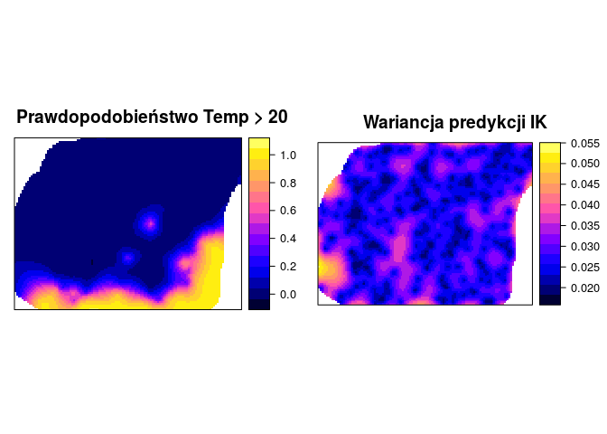
9.2.6 Kriging danych kodowanych (ang. Indicator kriging)
vario_ind20 <- variogram(I(temp<20)~1, punkty)
fitted_ind20 <- fit.variogram(vario_ind20, vgm(0.08, 'Sph', 3500, nugget=0.01))
vario_ind16 <- variogram(I(temp<16)~1, punkty)
fitted_ind16 <- fit.variogram(vario_ind16, vgm(0.18, 'Sph', 3500, nugget=0.03))
vario_ind12 <- variogram(I(temp<12)~1, punkty)
fitted_ind12 <- fit.variogram(vario_ind12, vgm(0.13, 'Sph', 2000, nugget=0.03))
ik20 <- krige(I(temp<20)~1, punkty, siatka, model=fitted_ind20, nmax=30)## [using ordinary kriging]ik16 <- krige(I(temp<16)~1, punkty, siatka, model=fitted_ind16, nmax=30)## [using ordinary kriging]ik12 <- krige(I(temp<12)~1, punkty, siatka, model=fitted_ind12, nmax=30)## [using ordinary kriging]
10 Estymacje wielozmienne
10.1 Kokriging (prosty i zwykły, SCK i OCK)
10.1.1 Kokriging (ang. co-kriging)
- Kokriging pozwala na wykorzystanie dodatkowej zmiennej (ang. auxiliary variable), zwanej inaczej kozmienną (ang. co-variable), która może być użyta do prognozwania wartości badanej zmiennej w nieopróbowanej lokalizacji
- Zmienna dodatkowa może być pomierzona w tych samych miejscach, gdzie badana zmienna, jak też w innych niż badana zmienna
- Możliwa jest też sytuacja, gdy zmienna dodatkowa jest pomierzona w dwóch powyższych przypadkach
- Kokriging wymaga, aby obie zmienne były istotnie ze sobą skorelowane
- Najczęściej kokriging jest stosowany w sytuacji, gdy zmienna dodatkowa jest łatwiejsza (tańsza) do pomierzenia niż zmienna główna
- W efekcie, uzyskany zbiór danych zawiera informacje o badanej zmiennej oraz gęściej opróbowane informacje o zmiennej dodatkowej
- Jeżeli informacje o zmiennej dodatkowej są znane dla całego obszaru wówczas bardziej odpowiednią techniką będzie kriging z zewnątrznym trendem (KED)
10.1.2 Kokriging | Wybór dodatkowej zmiennej
- Wybór zmiennej dodatkowej może opierać się na dwóch kryteriach:
- Teoretycznym
- Empirycznym
10.2 Krossemiwariogramy
10.2.1 Krossemiwariogramy
- Krossemiwariogram jest to wariancja różnicy pomiędzy dwiema zmiennymi w dwóch lokalizacjach
- Wyliczając Krossemiwariogram otrzymujemy empiryczne semiwatiogramy dla dwóch badanych zmiennych oraz kroswariogram dla kombinacji dwóch zmiennych
- Krossemiwariogram znajduje swoje zastosowanie w technice zwanej kokrigingiem
10.2.2 Krossemiwariogramy
library('geostatbook')
data(punkty)
data(punkty_ndvi)
data(siatka)g <- gstat(NULL, id='SAVI', form = savi~1, data = punkty)
g <- gstat(g, id='NDVI', form = ndvi~1, data = punkty_ndvi)
g## data:
## SAVI : formula = savi`~`1 ; data dim = 252 x 5
## NDVI : formula = ndvi`~`1 ; data dim = 1011 x 1v <- variogram(g)
plot(v)
10.3 Modelowanie krossemiwariogramów
10.3.1 Modelowanie krossemiwariogramów | fit.lmc
- Funkcja
fit.lmcdopasowuje liniowy model koregionalizacji do semiwariogramów wielozmienych
10.3.2 Modelowanie krossemiwariogramów
g <- gstat(g, model=vgm(0.006, 'Sph', 2000, 0.001), fill.all=TRUE)
g_fit <- fit.lmc(v, g)
g_fit## data:
## SAVI : formula = savi`~`1 ; data dim = 252 x 5
## NDVI : formula = ndvi`~`1 ; data dim = 1011 x 1
## variograms:
## model psill range
## SAVI[1] Nug 0.002841025 0
## SAVI[2] Sph 0.004263643 2000
## NDVI[1] Nug 0.003120480 0
## NDVI[2] Sph 0.006335148 2000
## SAVI.NDVI[1] Nug 0.002977476 0
## SAVI.NDVI[2] Sph 0.004962607 2000plot(v, g_fit)
10.4 Kokriging
10.4.1 Kokriging
ck <- predict(g_fit, siatka) ## Linear Model of Coregionalization found. Good.
## [using ordinary cokriging]summary(ck)## Object of class SpatialPixelsDataFrame
## Coordinates:
## min max
## x 745586.7 756926.7
## y 712661.2 721211.2
## Is projected: TRUE
## proj4string :
## [+init=epsg:2180 +proj=tmerc +lat_0=0 +lon_0=19 +k=0.9993
## +x_0=500000 +y_0=-5300000 +ellps=GRS80 +towgs84=0,0,0,0,0,0,0
## +units=m +no_defs]
## Number of points: 10993
## Grid attributes:
## cellcentre.offset cellsize cells.dim
## x 745586.7 90 127
## y 712661.2 90 96
## Data attributes:
## SAVI.pred SAVI.var NDVI.pred NDVI.var
## Min. :0.1092 Min. :0.003400 Min. :0.2284 Min. :0.003685
## 1st Qu.:0.2903 1st Qu.:0.003778 1st Qu.:0.4714 1st Qu.:0.004258
## Median :0.3166 Median :0.003893 Median :0.5051 Median :0.004427
## Mean :0.3132 Mean :0.003914 Mean :0.5008 Mean :0.004458
## 3rd Qu.:0.3438 3rd Qu.:0.004024 3rd Qu.:0.5406 3rd Qu.:0.004613
## Max. :0.4055 Max. :0.005113 Max. :0.6260 Max. :0.006300
## cov.SAVI.NDVI
## Min. :0.003399
## 1st Qu.:0.003824
## Median :0.003953
## Mean :0.003980
## 3rd Qu.:0.004103
## Max. :0.005439spplot(ck, 'SAVI.pred')
spplot(ck, 'SAVI.var')11 Wykorzystanie do estymacji danych uzupełniających
11.1 Kriging stratyfikowany (ang. Kriging within strata)
11.1.1 Kriging stratyfikowany (ang. Kriging within strata)
- Zakłada on, że zmienność badanego zjawiska zależy od zmiennej jakościowej (kategoryzowanej)
- Przykładowo, zróżnicowanie badanej zmiennej jest różne w zależności od pokrycia terenu
- Kriging stratyfikowany wymaga posiadania danych zmiennej jakościowej (kategoryzowanej) na całym badanym obszarze
11.1.2 Kriging stratyfikowany (ang. Kriging within strata)
library('geostatbook')
data(punkty)
data(siatka)siatka$clc <- as.factor(siatka$clc)
spplot(siatka, 'clc')
vario_kws1 <- variogram(temp~1, punkty[punkty$clc==1, ])
plot(vario_kws1)
fitted_kws1 <- fit.variogram(vario_kws1, vgm(10, model = 'Sph', range = 4500, nugget = 0.5))
plot(vario_kws1, fitted_kws1)
vario_kws2 <- variogram(temp~1, punkty[punkty$clc==2, ])
plot(vario_kws2)
fitted_kws2 <- fit.variogram(vario_kws2, vgm(5, model = 'Sph', range = 4500, nugget = 0.1))
plot(vario_kws2, fitted_kws2)
vario_kws4 <- variogram(temp~1, punkty[punkty$clc==4, ])
plot(vario_kws4)
fitted_kws4 <- fit.variogram(vario_kws4, vgm(0.5, model = 'Nug'))
plot(vario_kws4, fitted_kws4)
kws1 <- krige(temp~1, punkty[punkty$clc==1, ], siatka[na.omit(siatka$clc==1), ], model = fitted_kws1, nmax = 50)## [using ordinary kriging]kws2 <- krige(temp~1, punkty[punkty$clc==2, ], siatka[na.omit(siatka$clc==2), ], model = fitted_kws2, nmax = 50)## [using ordinary kriging]kws4 <- krige(temp~1, punkty[punkty$clc==4, ], siatka[na.omit(siatka$clc==4), ], model = fitted_kws4, nmax = 50)## [using ordinary kriging]kws <- rbind(as.data.frame(kws1), as.data.frame(kws2), as.data.frame(kws4))
coordinates(kws) <- ~x+y
kws <- as(kws, 'SpatialPixelsDataFrame')
spplot(kws, 'var1.pred', sp.layout=(list=SpatialPoints(punkty)))
11.2 Prosty kriging ze zmiennymi średnimi lokalnymi (LVM)
11.2.1 Prosty kriging ze zmiennymi średnimi lokalnymi (LVM)
- Prosty kriging ze zmiennymi średnimi lokalnymi zamiast znanej (stałej) stacjonarnej średniej wykorzystuje zmienne średnie lokalne uzyskane na podstawie innej informacji
- Lokalna średnia może być uzyskana za pomocą wyliczenia regresji liniowej pomiędzy zmienną badaną a zmienną dodatkową
11.2.2 Prosty kriging ze zmiennymi średnimi lokalnymi (LVM)
coef <- lm(temp~srtm, punkty)$coef
coef## (Intercept) srtm
## 16.480355788 -0.004535255vario <- variogram(temp~srtm, punkty)
model_sim <- vgm(10, model = 'Sph', range = 4000, nugget = 1)
model_sim## model psill range
## 1 Nug 1 0
## 2 Sph 10 4000fitted_sim <- fit.variogram(vario, model_sim)
fitted_sim## model psill range
## 1 Nug 0.9382992 0.000
## 2 Sph 14.5761601 6027.977plot(vario, model=fitted_sim)
sk_lvm <- krige(temp~srtm, punkty, siatka, model=fitted_sim, beta = coef)## [using simple kriging]summary(sk_lvm)## Object of class SpatialPixelsDataFrame
## Coordinates:
## min max
## x 745586.7 756926.7
## y 712661.2 721211.2
## Is projected: TRUE
## proj4string :
## [+init=epsg:2180 +proj=tmerc +lat_0=0 +lon_0=19 +k=0.9993
## +x_0=500000 +y_0=-5300000 +ellps=GRS80 +towgs84=0,0,0,0,0,0,0
## +units=m +no_defs]
## Number of points: 10993
## Grid attributes:
## cellcentre.offset cellsize cells.dim
## x 745586.7 90 127
## y 712661.2 90 96
## Data attributes:
## var1.pred var1.var
## Min. : 8.624 Min. :1.415
## 1st Qu.:12.942 1st Qu.:2.148
## Median :15.037 Median :2.458
## Mean :15.666 Mean :2.543
## 3rd Qu.:17.875 3rd Qu.:2.853
## Max. :25.922 Max. :5.313
## NA's :43 NA's :43spplot(sk_lvm, 'var1.pred')
spplot(sk_lvm, 'var1.var')
11.3 Kriging uniwersalny (ang. Universal kriging)
11.3.1 Kriging uniwersalny (ang. Universal kriging)
- Określany również jako kriging z trendem (ang. Kriging with a trend model)
- Zakłada on, że nieznana średnia lokalna zmiania się stopniowo na badanym obszarze
11.3.2 Kriging uniwersalny (ang. Universal kriging)
punkty$clc <- as.factor(punkty$clc)
vario_uk1 <- variogram(temp~clc, punkty)
vario_uk1## np dist gamma dir.hor dir.ver id
## 1 131 218.6119 1.492195 0 0 var1
## 2 312 490.7338 2.692324 0 0 var1
## 3 516 797.7160 4.143141 0 0 var1
## 4 683 1114.7117 4.032339 0 0 var1
## 5 849 1433.5720 4.422906 0 0 var1
## 6 965 1743.1558 5.112034 0 0 var1
## 7 1103 2057.9031 5.212272 0 0 var1
## 8 1246 2370.6101 5.790961 0 0 var1
## 9 1219 2690.1356 6.934307 0 0 var1
## 10 1343 3005.8324 7.179945 0 0 var1
## 11 1377 3324.7716 7.685214 0 0 var1
## 12 1432 3635.2805 7.885347 0 0 var1
## 13 1485 3952.0183 8.361701 0 0 var1
## 14 1494 4268.2314 9.018930 0 0 var1
## 15 1478 4585.7878 9.241991 0 0 var1plot(vario_uk1)
model_uk1 <- vgm(8, model = 'Sph', range = 3000, nugget = 1)
vario_fit_uk1 <- fit.variogram(vario_uk1, model=model_uk1)
vario_fit_uk1## model psill range
## 1 Nug 1.292171 0.000
## 2 Sph 7.441007 4763.345plot(vario_uk1, vario_fit_uk1)
siatka$clc <- as.factor(siatka$clc)
spplot(siatka, 'clc')
uk1 <- krige(temp~clc, locations = punkty, newdata=siatka, model=vario_fit_uk1)## [using universal kriging]spplot(uk1, 'var1.pred')
spplot(uk1, 'var1.var')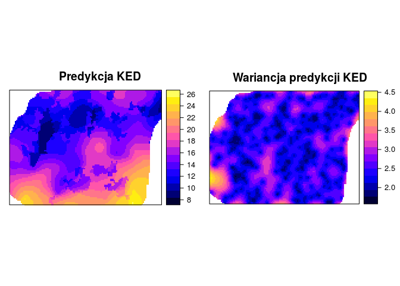
vario_uk2 <- variogram(temp~ndvi+srtm, punkty)
vario_uk2## np dist gamma dir.hor dir.ver id
## 1 131 218.6119 1.386828 0 0 var1
## 2 312 490.7338 2.822672 0 0 var1
## 3 516 797.7160 4.294554 0 0 var1
## 4 683 1114.7117 4.501500 0 0 var1
## 5 849 1433.5720 6.310286 0 0 var1
## 6 965 1743.1558 7.395085 0 0 var1
## 7 1103 2057.9031 7.375078 0 0 var1
## 8 1246 2370.6101 8.529375 0 0 var1
## 9 1219 2690.1356 9.517366 0 0 var1
## 10 1343 3005.8324 10.213423 0 0 var1
## 11 1377 3324.7716 11.100148 0 0 var1
## 12 1432 3635.2805 11.730141 0 0 var1
## 13 1485 3952.0183 13.053957 0 0 var1
## 14 1494 4268.2314 14.252817 0 0 var1
## 15 1478 4585.7878 14.968739 0 0 var1plot(vario_uk2)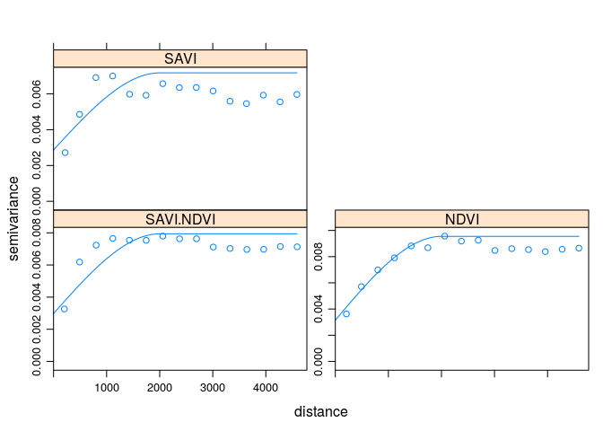
model <- vgm(8, model = 'Sph', range = 3000, nugget = 1)
vario_fit_uk2 <- fit.variogram(vario_uk2, model=model)
vario_fit_uk2## model psill range
## 1 Nug 0.8470453 0.000
## 2 Sph 14.8073531 6243.382plot(vario_uk2, vario_fit_uk2)
uk2 <- krige(temp~ndvi+srtm, locations = punkty, newdata=siatka, model=vario_fit_uk2)## [using universal kriging]spplot(uk2, 'var1.pred')
spplot(uk2, 'var1.var')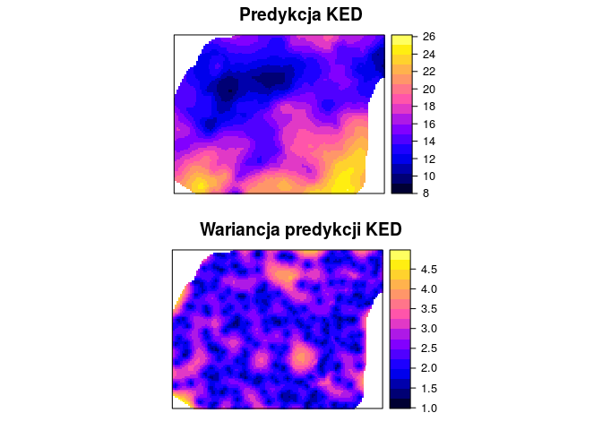
12 Ocena jakości estymacji [UWAGA POMIESZANY ME Z RESZTĄ!!]
12.1 Statystyki jakości estymacji
12.1.1 Statystyki jakości estymacji
- Służą do oceny i porównania jakości estymacji
- Do podstawowych statystyk ocen jakości estymacji należą:
- Średni błąd estymacji (ME, ang. mean error)
- Pierwiastek średniego błędu kwadratowego (RMSE, ang. root square prediction error)
- Współczynnik korelacji
- Rozkład błędu (np. 5. percentyl, mediana, 95. percentyl)
12.1.2 Statystyki jakości estymacji
- Idealna estymacja dawałaby brak błędu oraz wspołczynnik korelacji pomiędzy pomiarami (całą populacją) i szacunkiem równy 1
- Wysokie, pojedyncze wartości błędu mogą świadczyć, np. o wystapieniu wartości odstających
12.1.3 Średni błąd estymacji
- Optymalnie wartość średniego błędu estymacji powinna być jak najbliżej 0
\[ ME=\frac{\sum_{i=1}^{n}(\hat{v}_i-v_i)}{n} \]
### Pierwiastek średniego błędu kwadratowego - Optymalnie wartość pierwiastka średniego błędu kwadratowego powinna być jak najmniejsza
\[ RMSE=\sqrt{\frac{\sum_{i=1}^{n}(\hat{v}_i-v_i)^2}{n}} \]
12.1.4 Współczynnik korelacji
- Optymalnie wartość współczynnika korelacji powinna być jak najwyższa
12.1.5 Statystyki jakości estymacji | Mapa
library('geostatbook')
data(punkty)## [using simple kriging]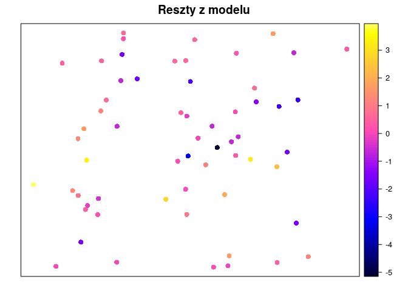
12.1.6 Statystyki jakości estymacji | Histogram

12.1.7 Statystyki jakości estymacji | Wykres rozrzutu
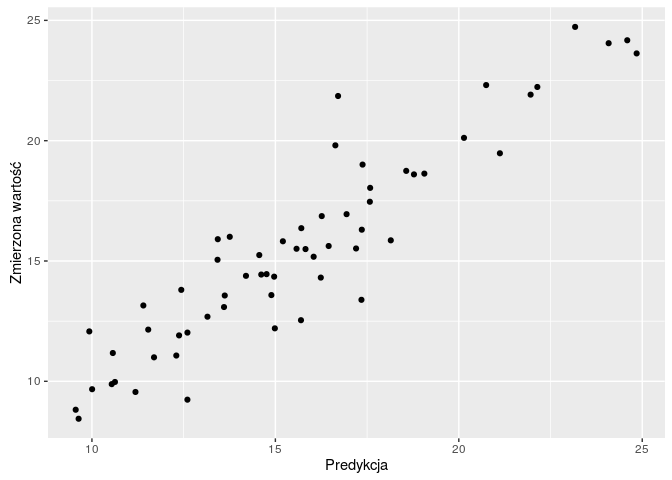
12.2 Walidacja wyników estymacji
12.2.1 Walidacja wyników estymacji
- Dokładne dopasowanie modelu do danych może w efekcie nie dawać najlepszych wyników
- W efekcie ważne jest stosowanie metod pozwalających na wybranie optymalnego modelu
- Do takich metod należy, między innymi, walidacja podzbiorem (ang. jackknifing) oraz kroswalidacja (ang. crossvalidation)
12.2.2 Walidacja podzbiorem
- Polega na podziale zbioru danych na dwa podzbiory - treningowy i testowy
- Zbiór treningowy służy do estymacji wartości
- Wynik estymacji porównywany jest z rzeczywistymi wartościami ze zbioru testowego
- Zaletą tego podejścia jest stosowanie danych niezależnych od estymacji
- Wadą jest konieczność posiadania dużego zbioru danych
12.2.3 Walidacja podzbiorem
set.seed(124)
indeks <- as.vector(createDataPartition(punkty$temp, p=0.75, list=FALSE))
indeks## [1] 2 3 5 6 7 8 11 12 13 14 15 16 18 19 20 21 22
## [18] 24 25 26 28 30 31 32 34 35 36 38 40 41 42 46 48 49
## [35] 50 53 55 58 61 63 64 66 68 69 71 72 73 74 75 76 78
## [52] 79 81 82 83 84 86 87 88 89 90 91 92 93 95 96 97 98
## [69] 99 100 101 102 103 104 105 106 107 108 109 110 111 113 114 115 117
## [86] 119 120 122 123 124 126 127 128 129 131 132 133 134 135 136 138 139
## [103] 141 142 143 144 145 146 147 148 150 151 153 156 157 158 159 161 162
## [120] 163 164 165 166 167 168 169 170 171 173 174 176 178 180 181 182 183
## [137] 184 185 186 187 189 190 191 192 193 194 195 196 198 199 201 202 203
## [154] 204 206 207 210 211 213 214 215 216 217 218 219 221 222 223 225 227
## [171] 228 229 230 231 232 233 234 235 236 237 238 240 241 242 243 244 245
## [188] 246 248 249 250 251train <- punkty[indeks, ]
test <- punkty[-indeks, ]
vario <- variogram(temp~1, data=train)
model <- vgm(10, model = 'Sph', range = 4000, nugget = 0.5)
fitted <- fit.variogram(vario, model)
plot(vario, model=fitted)
test_sk <- krige(temp~1, train, test, model=fitted, beta=15.324)## [using simple kriging]summary(test_sk)## Object of class SpatialPointsDataFrame
## Coordinates:
## min max
## x 745947.9 756963.6
## y 712721.8 720961.5
## Is projected: TRUE
## proj4string :
## [+init=epsg:2180 +proj=tmerc +lat_0=0 +lon_0=19 +k=0.9993
## +x_0=500000 +y_0=-5300000 +ellps=GRS80 +towgs84=0,0,0,0,0,0,0
## +units=m +no_defs]
## Number of points: 60
## Data attributes:
## var1.pred var1.var
## Min. : 9.557 Min. :1.767
## 1st Qu.:12.603 1st Qu.:2.251
## Median :15.391 Median :2.612
## Mean :15.634 Mean :2.696
## 3rd Qu.:17.426 3rd Qu.:3.097
## Max. :24.848 Max. :4.622reszta_sk <- test_sk$var1.pred - test$temp
summary(reszta_sk)## Min. 1st Qu. Median Mean 3rd Qu. Max.
## -5.1500 -0.6094 0.2412 0.1428 0.8380 3.9580ME <- sum(reszta_sk)/length(reszta_sk)
ME## [1] 0.1427624RMSE <- sqrt(sum(reszta_sk^2)/length(reszta_sk))
RMSE## [1] 1.553077srednia_reszta <- test$temp - mean(test$temp)
R2 <- 1 - sum(reszta_sk^2)/sum(srednia_reszta^2)
R2## [1] 0.8579729test_sk$reszty <- reszta_sk
spplot(test_sk, 'reszty')
12.2.4 Kroswalidacja
- W przypadku kroswalidacji te same dane wykorzystywane są do budowy modelu, estymacji, a następnie do oceny prognozy
- Procedura kroswalidacji LOO (ang. leave-one-out cross-validation)
- Zbudowanie matematycznego modelu z dostępnych obserwacji
- Dla każdej znanej obserwacji następuje:
- Usunięcie jej ze zbioru danych
- Użycie modelu do wykonania predykcji w miejscu tej obserwacji
- Wyliczenie reszty (ang. residual), czyli różnicy pomiędzy znaną wartością a obserwacją
- Podsumowanie otrzymanych wyników
- W pakiecie
gstat, kroswalidacja LOO jest dostępna w funkcjachkrige.cvorazgstat.cv
12.2.5 Kroswalidacja
vario <- variogram(temp~1, data=punkty)
model <- vgm(10, model = 'Sph', range = 4000, nugget = 0.5)
fitted <- fit.variogram(vario, model)
cv_sk <- krige.cv(temp~1, punkty, model=fitted, beta=15.324)
summary(cv_sk)## Object of class SpatialPointsDataFrame
## Coordinates:
## min max
## x 745619.3 756963.6
## y 712664.4 721253.9
## Is projected: NA
## proj4string : [NA]
## Number of points: 252
## Data attributes:
## var1.pred var1.var observed residual
## Min. : 8.975 Min. :1.593 Min. : 8.153 Min. :-5.47105
## 1st Qu.:12.482 1st Qu.:2.016 1st Qu.:12.459 1st Qu.:-0.83011
## Median :15.102 Median :2.325 Median :15.210 Median :-0.12253
## Mean :15.546 Mean :2.477 Mean :15.522 Mean :-0.02396
## 3rd Qu.:17.743 3rd Qu.:2.760 3rd Qu.:18.258 3rd Qu.: 0.85718
## Max. :25.531 Max. :7.124 Max. :26.700 Max. : 4.91660
## zscore fold
## Min. :-3.641395 Min. : 1.00
## 1st Qu.:-0.554410 1st Qu.: 63.75
## Median :-0.083264 Median :126.50
## Mean :-0.003519 Mean :126.50
## 3rd Qu.: 0.597911 3rd Qu.:189.25
## Max. : 2.890799 Max. :252.00spplot(cv_sk, 'residual')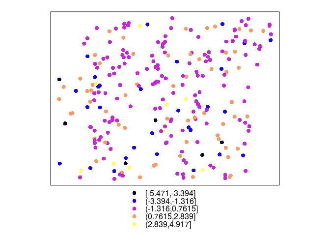
13 Symulacje
13.1 Symulacje geostatystyczne
13.1.1 Symulacje geostatystyczne
- Kriging daje optymalne predykcje, czyli wyznacza najbardziej potencjalnie możliwą wartość dla wybranej lokalizacji
- Dodatkowo, efektem krigingu jest wygładzony obraz. W konsekwencji wyniki estymacji różnią się od danych pomiarowych
- Jest to tylko (aż?) predykcja. Prawdziwa wartość jest niepewna …
- Korzystając z symulacji geostatystycznych nie tworzymy predykcji, ale generujemy równie prawdopodobne możliwości poprzez symulację z rozkładu prawdopodobieństwa (wykorzystując genereator liczb losowych)
13.1.2 Symulacje geostatystyczne | Cel
- Efekt symulacji ma bardziej realistyczny przestrzenny wzór (ang. pattern) niż kriging, którego efektem jest wygładzona reprezentacja rzeczywistości
- Każda z symulowanych map jest równie prawdopodobna
- Symulacje pozwalają na przedstawianie niepewności interpolacji
- Jednocześnie - kriging jest znacznie lepszy, gdy naszym celem jest jak najdokładniejsza predykcja
13.2 Typy symulacji
13.2.1 Typy symulacji
- Symulacje bezwarunkowe (ang. Unconditional Simulations) - wykorzystuje semiwariogram, żeby włączyć informację przestrzenną, ale wartości ze zmierzonych punktów nie są wykorzystywane.
- Symulacje warunkowe (ang. Conditional Simulations) - opiera się ona o średnią wartość, strukturę kowariancji oraz obserwowane wartości
13.3 Symulacje bezwarunkowe
library('geostatbook')
data(punkty)
data(siatka)sym_bezw1 <- krige(formula=z~1, locations=NULL, newdata=siatka, dummy=TRUE,
beta=1, model=vgm(psill=0.025,model='Exp',range=100), nsim=4, nmax=30)## [using unconditional Gaussian simulation]spplot(sym_bezw1, main='Przestrzennie skorelowana powierzchnia \nśrednia=1, sill=0.025, zasięg=100, model wykładniczy')
sym_bezw2 <- krige(formula=z~1, locations=NULL, newdata=siatka, dummy=TRUE,
beta=1, model=vgm(psill=0.025,model='Exp',range=1500), nsim=4, nmax=30)## [using unconditional Gaussian simulation]spplot(sym_bezw2, main='Przestrzennie skorelowana powierzchnia \nśrednia=1, sill=0.025, zasięg=1500, model wykładniczy')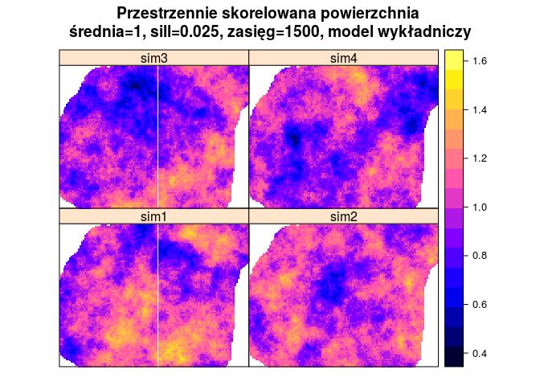
13.4 Symulacje warunkowe
13.4.1 Sekwencyjna symulacja gaussowska (ang. Sequential Gaussian simulation)
- Wybranie lokalizacji nie posiadającej zmierzonej wartości badanej zmiennej
- Kriging wartości tej lokalizacji korzystając z dostepnych danych, co pozwala na uzyskanie rozkładu prawdopodobieństwa badanej zmiennej
- Wylosowanie wartości z rozkładu prawdopodobieństwa za pomocą generatora liczba losowych i przypisanie tej wartości do lokalizacji
- Dodanie symulowaniej wartości do zbioru danych i przejście do kolejnej lokalizacji
- Powtórzenie poprzednich kroków, aż do momentu gdy nie pozostanie już żadna nieokreślona lokalizacja
13.4.2 Sekwencyjna symulacja gaussowska (ang. Sequential Gaussian simulation)
vario <- variogram(temp~1, punkty)
model <- vgm(10, model = 'Sph', range = 4500, nugget=1)
fitted <- fit.variogram(vario, model)
plot(vario, model=fitted)
sym_ok <- krige(temp~1, punkty, siatka, model=fitted, nsim=4, nmax=30)## drawing 4 GLS realisations of beta...
## [using conditional Gaussian simulation]spplot(sym_ok)
13.4.3 Sekwencyjna symulacja gaussowska (ang. Sequential Gaussian simulation)
sym_sk <- krige(temp~1, punkty, siatka, model=fitted, beta=15.324, nsim=100, nmax=30)## [using conditional Gaussian simulation]sym_sk <- stack(sym_sk)
sym_sk_sd <- calc(sym_sk, fun = sd)
spplot(sym_sk_sd)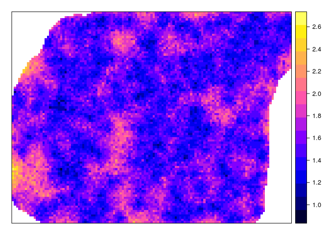
13.5 Sekwencyjna symulacja danych kodowanych (ang. Sequential indicator simulation)
13.5.1 Sekwencyjna symulacja danych kodowanych (ang. Sequential indicator simulation)
summary(punkty$temp) ## Min. 1st Qu. Median Mean 3rd Qu. Max.
## 8.153 12.460 15.210 15.520 18.260 26.700punkty$temp_ind <- punkty$temp < 12
summary(punkty$temp_ind) ## Mode FALSE TRUE NA's
## logical 198 54 0vario_ind <- variogram(temp_ind~1, punkty)
plot(vario_ind)
model_ind <- vgm(0.14, model = 'Sph', range = 2000, nugget = 0.02)
plot(vario_ind, model=model_ind)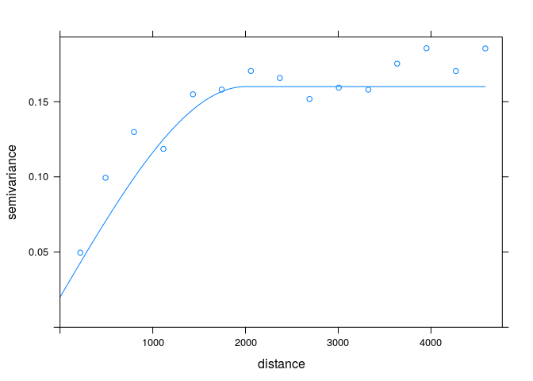
fitted_ind <- fit.variogram(vario_ind, model_ind)
fitted_ind## model psill range
## 1 Nug 0.02543208 0.000
## 2 Sph 0.13620532 1565.761plot(vario_ind, model=fitted_ind)
sym_ind <- krige(temp_ind~1, punkty, siatka, model=fitted_ind, indicators=TRUE, nsim=4, nmax=30)## drawing 4 GLS realisations of beta...
## [using conditional indicator simulation]spplot(sym_ind, main='Symulacje warunkowe')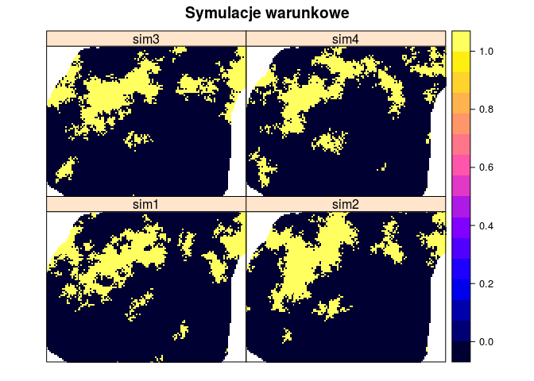